Cổ tay (wrist), hay khối xương cổ tay (carpus), chứa tám xương cổ tay (carpal bones) mà, khi được xem như một nhóm, đóng vai trò như một "vật đệm" chức năng giữa cẳng tay (forearm) và bàn tay (hand). Bên cạnh nhiều khớp liên xương cổ tay (intercarpal joints) nhỏ, cổ tay gồm hai khớp chính: khớp quay–cổ tay (radiocarpal joint) và khớp giữa cổ tay (midcarpal joint) (Hình 7.1). Khớp quay–cổ tay nằm giữa đầu xa của xương quay (radius) và hàng xương cổ tay phía gần. Ngay phía xa của khớp này là khớp giữa cổ tay, nối hàng xương cổ tay phía gần với hàng phía xa. Hai khớp này cho phép cổ tay gấp (flexion) và duỗi (extension), cũng như vận động sang hai bên trong những cử động được gọi là lệch quay (radial deviation) và lệch trụ (ulnar deviation). Khớp quay–trụ xa (distal radio-ulnar joint) lân cận đã được mô tả chính thức trong Chương 6, chủ yếu vì vai trò chức năng của nó đối với xoay sấp (pronation) và xoay ngửa (supination) của cẳng tay. Đĩa khớp (articular disc) nằm bên trong khớp quay–trụ xa sẽ được nhắc lại trong chương này vì mối liên quan giải phẫu chặt chẽ của nó với khớp quay–cổ tay.
Vị trí và sự vững chắc của cổ tay ảnh hưởng đáng kể đến chức năng của bàn tay. Đó là vì nhiều cơ chi phối các ngón có nguyên ủy ở phía gần so với bàn tay, bám vào cẳng tay. Một cổ tay bị đau, mất vững hoặc yếu thường có xu hướng đảm nhận một tư thế làm cản trở chiều dài tối ưu và sức căng thụ động của hệ cơ ngoại lai, từ đó làm giảm hiệu quả của nắm giữ (grasp).
Một số thuật ngữ mới được đưa vào đây để mô tả vị trí tương đối và địa hình bên trong cổ tay và bàn tay. Gan tay (palmar, hay volar) đồng nghĩa với trước (anterior); mu tay (dorsal) đồng nghĩa với sau (posterior). Các thuật ngữ này được dùng thay thế cho nhau trong suốt chương này và chương tiếp theo về bàn tay.
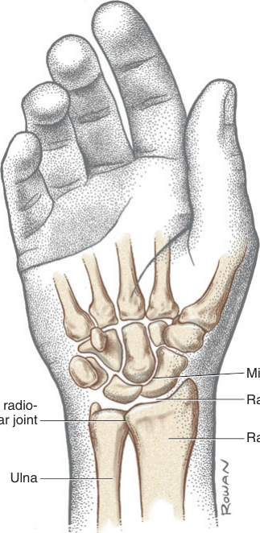
Mặt mu của đầu xa xương quay (distal radius) có một số rãnh và vùng nhô lên giúp dẫn hướng hoặc ổn định các gân đi về phía cổ tay và bàn tay (Hình 7.2). Ví dụ, củ mu (dorsal / Lister's tubercle) có thể sờ thấy được, ngăn cách gân của cơ duỗi cổ tay quay ngắn (extensor carpi radialis brevis) với gân của cơ duỗi ngón cái dài (extensor pollicis longus).
Mặt gan tay hay mặt lòng của đầu xa xương quay là nơi bám gần của bao khớp (joint capsule) cổ tay và của các dây chằng quay–cổ tay gan tay (palmar radiocarpal ligaments) dày (Hình 7.3A). Mỏm trâm (styloid process) của xương quay nhô về phía xa từ mặt ngoài của xương quay. Mỏm trâm của xương trụ (ulna), nhọn hơn so với mỏm tương ứng bên quay, nhô về phía xa từ góc sau–trong của đầu xa xương trụ.
Mặt khớp xa của xương quay lõm theo cả hướng trong–ngoài lẫn hướng trước–sau (xem Hình 6.25B). Các diện khớp được hình thành trong sụn khớp (articular cartilage) từ những vết lõm do xương thuyền (scaphoid) và xương nguyệt (lunate) của cổ tay tạo ra.
Đầu xa của xương quay có hai đặc điểm cấu hình mang tầm quan trọng cơ sinh học. Thứ nhất, đầu xa của xương quay nghiêng khoảng 25 độ về hướng trụ (trong) (Hình 7.4A). Độ nghiêng trụ (ulnar tilt) này cho phép cổ tay và bàn tay xoay xa hơn vào lệch trụ so với lệch quay. Do độ nghiêng này, lệch quay của cổ tay bị hạn chế bởi sự cọ xương của mặt ngoài khối xương cổ tay vào mỏm trâm của xương quay. Thứ hai, mặt khớp xa của xương quay nghiêng khoảng 10 độ về hướng gan tay (xem Hình 7.4B). Độ nghiêng gan tay (palmar tilt) này giải thích một phần lý do tầm gấp lớn hơn tầm duỗi tại cổ tay.
Gãy đầu xa xương quay thường làm ảnh hưởng đến độ nghiêng tự nhiên của đầu xa xương quay. Nếu thiếu sự xử lý chỉnh hình thích đáng, một độ nghiêng bất thường vĩnh viễn của đầu xa xương quay có thể làm thay đổi đáng kể chức năng của khớp quay–cổ tay và khớp quay–trụ xa. Chủ đề này sẽ được bàn luận ở phần sau của chương này.
Các Đặc Điểm Giải Phẫu Xương Của Đoạn Xa Cẳng Tay (Osteologic Features of the Distal Forearm)
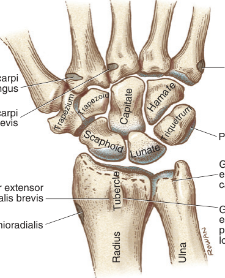
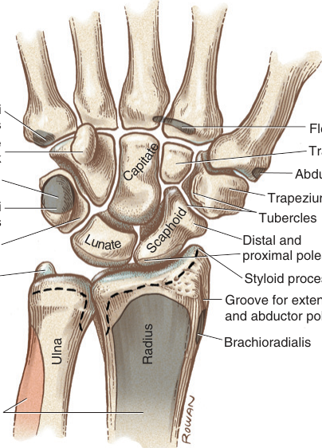
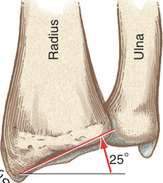
Theo hướng từ quay (ngoài) sang trụ, hàng xương cổ tay phía gần gồm xương thuyền, xương nguyệt, xương tháp và xương đậu. Hàng phía xa gồm xương thang, xương thang nhỏ, xương cả và xương móc (xem các Hình 7.2 và 7.3).
Hàng xương cổ tay phía gần được nối với nhau theo một cách tương đối lỏng lẻo. Ngược lại, hàng xương cổ tay phía xa được gắn chặt bởi các dây chằng (ligaments) khỏe, tạo nên một nền cứng nhắc và ổn định để khớp với các xương đốt bàn tay (metacarpal bones).
Phần tiếp theo trình bày một mô tả giải phẫu tổng quát về từng xương cổ tay. Khả năng hình dung vị trí tương đối và hình dạng của mỗi xương rất có ích cho việc tìm hiểu giải phẫu dây chằng và vận động học cổ tay (wrist kinematics).
Tên gọi của xương thuyền (scaphoid) dựa trên sự giống nhau mơ hồ của nó với một chiếc thuyền (scaphoid, từ tiếng Hy Lạp skaphoeides, nghĩa là "giống một chiếc thuyền"). Hầu hết mặt dưới của chiếc thuyền tựa lên xương quay; "khoang chở hàng" của chiếc thuyền được lấp đầy bởi một phần chỏm của xương cả (xem Hình 7.3A). Khoảng 75% bề mặt của xương thuyền được lót bằng sụn khớp (articular cartilage), tạo thành các khớp hoạt dịch (synovial joints) với bốn xương cổ tay khác và với xương quay.
Xương thuyền có hai mặt lồi được gọi là các cực (poles). Cực gần khớp với diện thuyền của xương quay (xem Hình 6.25B). Cực xa có một mặt hơi tròn, khớp với xương thang và xương thang nhỏ. Cực xa nhô chéo theo hướng gan tay khoảng 30 độ, điều có thể nhận thấy rõ qua một lát cắt theo mặt phẳng dọc do chụp cộng hưởng từ (magnetic resonance, MR) cung cấp (xem Hình 7.3B). Cực xa có một củ tù, sờ thấy được ở nền gan tay của cơ ô mô cái (thenar musculature). Nhờ hình dạng thuôn dài của mình, xương thuyền liên hệ cả về chức năng lẫn giải phẫu với cả hai hàng xương cổ tay.
Mặt xa–trong của xương thuyền lõm sâu để tiếp nhận nửa ngoài của chỏm nhô rõ của xương cả (xem Hình 7.3A). Một diện khớp nhỏ ở mặt trong của xương thuyền khớp với xương nguyệt. Sự khớp nối này, được gia cố chủ yếu bởi dây chằng thuyền–nguyệt (scapholunate ligament), tạo nên một liên kết cơ học quan trọng bên trong hàng xương cổ tay phía gần — một điểm sẽ được nhắc lại ở phần sau của chương này.62
Xương nguyệt (lunate) (từ tiếng Latinh luna, nghĩa là mặt trăng) là xương trung tâm của hàng phía gần, nằm xen giữa xương thuyền và xương tháp. Xương nguyệt là xương vốn kém vững nhất trong số các xương cổ tay, một phần vì hình dạng của nó và vì thiếu các điểm bám cơ, nhưng cũng vì thiếu những điểm bám dây chằng vững chắc vào xương cả được giữ cứng nhắc.
Giống như xương thuyền, mặt gần của xương nguyệt lồi, lồng vào diện lõm trên xương quay (xem Hình 6.25B). Mặt xa của xương nguyệt lõm sâu, tạo cho xương hình dáng như trăng lưỡi liềm (xem Hình 7.3A). Mặt khớp này tiếp nhận hai chỗ lồi: nửa trong của chỏm xương cả và một phần đỉnh của xương móc.
Xương tháp (triquetrum), hay xương tam giác, chiếm vị trí xa nhất về phía trụ trong cổ tay, ngay phía trong xương nguyệt. Xương này dễ sờ thấy, ngay phía xa mỏm trâm của xương trụ, đặc biệt khi cổ tay được lệch quay. Mặt ngoài của xương tháp dài và phẳng để khớp với một mặt có hình dạng tương tự trên xương móc. Một diện khớp hình elip ở mặt gan tay của xương tiếp nhận xương đậu.
Xương tháp là xương bị gãy thường gặp thứ ba ở cổ tay, sau xương thuyền và xương nguyệt.
Xương đậu (pisiform), có nghĩa là "có hình dạng như hạt đậu", khớp lỏng lẻo với mặt gan tay của xương tháp. Xương này dễ di động và dễ sờ thấy. Xương đậu nằm lồng bên trong gân của cơ gấp cổ tay trụ (flexor carpi ulnaris) và vì thế mang những đặc điểm của một xương vừng (sesamoid bone). Thêm vào đó, xương này đóng vai trò là điểm bám cho cơ dạng ngón út (abductor digiti minimi), dây chằng ngang cổ tay và một số dây chằng khác.
Xương cả (capitate) là xương lớn nhất trong tất cả các xương cổ tay. Xương này chiếm một vị trí trung tâm trong cổ tay, tiếp xúc khớp với bảy xương bao quanh khi tính cả các xương đốt bàn tay (xem Hình 7.3A). Từ capitate bắt nguồn từ gốc Latinh có nghĩa là "đầu", dùng để mô tả hình dạng của mặt gần nhô rõ của xương. Chỏm lớn này khớp với chỗ lõm sâu do xương thuyền và xương nguyệt tạo nên. Xương cả được ổn định vững chắc giữa xương móc và xương thang nhỏ nhờ các dây chằng ngắn nhưng khỏe.
Mặt xa của xương cả được nối cứng nhắc với nền của xương đốt bàn tay thứ ba và, ở mức độ thấp hơn, với xương đốt bàn tay thứ hai và thứ tư. Sự khớp nối cứng nhắc này cho phép xương cả và xương đốt bàn tay thứ ba hoạt động như một cột (column) duy nhất, mang lại sự vững chắc dọc đáng kể cho toàn bộ cổ tay và bàn tay. Trục xoay (axis of rotation) của mọi cử động cổ tay đi qua xương cả.
Xương thang (trapezium) có hình dạng không đối xứng. Mặt gần hơi lõm để khớp với xương thuyền. Đặc biệt quan trọng là mặt xa hình yên ngựa, khớp với nền của xương đốt bàn tay thứ nhất. Khớp cổ tay–đốt bàn tay thứ nhất (first carpometacarpal joint) là một khớp kiểu yên ngựa được chuyên biệt hóa cao, cho phép ngón cái có một tầm vận động (range of motion) rộng.
Một củ mảnh và nhọn nhô ra từ mặt gan tay của xương thang. Củ này, cùng với củ gan tay của xương thuyền, làm điểm bám cho mặt ngoài của dây chằng ngang cổ tay (transverse carpal ligament) (Hình 7.5). Ngay phía trong của củ gan tay là một rãnh rõ dành cho gân của cơ gấp cổ tay quay (flexor carpi radialis).
Xương thang nhỏ (trapezoid) là một xương tương đối nhỏ, nằm chèn chặt giữa xương cả và xương thang. Giống như xương thang, xương thang nhỏ có mặt gần hơi lõm để khớp với xương thuyền. Xương này tạo một sự khớp nối tương đối chắc với nền của xương đốt bàn tay thứ hai.
Xương móc (hamate) được đặt tên theo mỏm lớn hình móc nhô ra từ mặt gan tay của nó. Xương móc có hình dạng chung như một kim tự tháp. Nền của nó, hay mặt xa, khớp với các nền của xương đốt bàn tay thứ tư và thứ năm. Sự khớp nối này mang lại tính di động chức năng quan trọng cho phía trụ của bàn tay, thấy rõ nhất khi bàn tay được "khuôn lại thành lòng máng".
Đỉnh của xương móc — tức mặt gần của nó — nhô về phía và tiếp xúc với xương nguyệt, nằm chèn giữa xương cả ở phía ngoài và xương tháp ở phía trong. Mỏm móc của xương móc (cùng với xương đậu) cung cấp các điểm bám xương cho mặt trong của dây chằng ngang cổ tay (xem Hình 7.5).
Như minh họa trong Hình 7.5, mặt gan tay của các xương cổ tay tạo thành một chỗ lõm. Bắc ngang qua chỗ lõm này là một dải mô liên kết xơ dày, được gọi là dây chằng ngang cổ tay. Dây chằng này được nối với bốn điểm nhô lên trên khối xương cổ tay phía gan tay, cụ thể là xương đậu và mỏm móc của xương móc ở phía trụ, và các củ của xương thuyền và xương thang ở phía quay.6 Dây chằng ngang cổ tay đóng vai trò là điểm bám chính cho nhiều cơ nội tại (intrinsic muscles) nằm trong bàn tay và cho cơ gan tay dài (palmaris longus), một cơ gấp cổ tay.
Dây chằng ngang cổ tay biến chỗ lõm gan tay do các xương cổ tay tạo thành thành một ống cổ tay (carpal tunnel). Ống này đóng vai trò là đường đi cho thần kinh giữa (median nerve) và các gân của các cơ gấp ngón tay ngoại lai (extrinsic flexor muscles of the digits) (Chương 8). Hơn nữa, dây chằng ngang cổ tay giữ cho các gân bị bao bọc không bị "căng như dây cung" về phía trước và thoát ra khỏi ống cổ tay, nổi bật nhất trong các động tác nắm giữ được thực hiện với cổ tay gấp một phần.
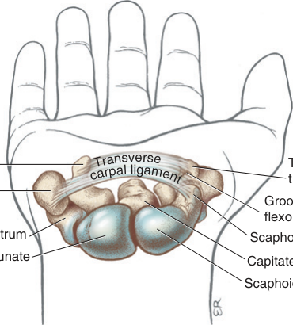
TẬP TRUNG ĐẶC BIỆT 7.1 — Xương Thuyền Và Xương Nguyệt: Sự Dễ Tổn Thương Do Chấn Thương Và Các Biến Chứng Lâm Sàng (Scaphoid and Lunate: Vulnerability to Injury and Clinical Complications)
Có lẽ trong y văn, người ta đã viết về xương thuyền và xương nguyệt nhiều hơn tất cả các xương cổ tay khác cộng lại. Cả hai xương đều nằm kẹp giữa hai cấu trúc cứng nhắc: đoạn xa cẳng tay và hàng xương cổ tay phía xa. Giống như một hạt đậu nằm trong cái kẹp hạt, xương thuyền và xương nguyệt dễ bị các chấn thương liên quan đến lực ép, với xác suất tương đối cao phát triển hoại tử vô mạch (avascular necrosis).
XƯƠNG THUYỀN VÀ SỰ DỄ GÃY CỦA NÓ (THE SCAPHOID BONE AND ITS VULNERABILITY TO FRACTURE)
Xương thuyền nằm ngay trên đường truyền lực đi qua cổ tay. Vì lý do này, xương thuyền là xương bị gãy thường gặp nhất ở cổ tay. Thực tế, chỉ đứng sau gãy đầu xa xương quay, xương thuyền là xương bị gãy thường gặp nhất của toàn bộ chi trên.89 Tỷ lệ gãy xương thuyền cao nhất xảy ra ở nam giới trẻ.106 Một cơ chế thường gặp gây gãy xương này là té ngã lên một cẳng tay ở tư thế xoay ngửa hoàn toàn, với cổ tay duỗi và lệch quay. Người bị gãy xương thuyền thường biểu hiện đau khi ấn vào củ gan tay của xương16, cũng như trong "hố thuốc lá" giải phẫu (anatomic snuff-box) của cổ tay. Hầu hết các trường hợp gãy xảy ra ở gần hoặc dọc theo "eo" của xương thuyền, nằm giữa hai cực của xương (xem mũi tên trong Hình 7.6A). Bởi hầu hết các mạch máu đi vào xương thuyền tại eo và ở phía xa của eo, những trường hợp gãy ở phía gần eo có thể dẫn đến chậm liền hoặc không liền xương.23 Nếu ổ gãy không được điều trị, cực gần có thể bị hoại tử vô mạch. Gãy cực gần thường đòi hỏi phẫu thuật chỉnh hình, tiếp theo là bất động trong ít nhất 12 tuần hoặc cho đến khi có bằng chứng liền xương trên phim X quang. Gãy cực xa thường không cần phẫu thuật, nhất là khi không bị di lệch, và nói chung chỉ cần bất động 6–8 tuần. Thời gian bất động thực tế có thể thay đổi rất nhiều, tùy thuộc vào hoàn cảnh cụ thể của bệnh nhân và của ổ gãy.
Thường thì một xương thuyền bị gãy đi kèm với các thương tổn khác dọc theo đường chịu trọng lực của cổ tay và bàn tay.50 Các thương tổn đi kèm thường gồm gãy và/hoặc trật xương nguyệt, và gãy xương thang cùng đầu xa xương quay.
BỆNH KIENBÖCK: HOẠI TỬ VÔ MẠCH CỦA XƯƠNG NGUYỆT (KIENBÖCK'S DISEASE: AVASCULAR NECROSIS OF THE LUNATE)
Tình trạng lunatomalacia (nghĩa đen là "sự mềm hóa của xương nguyệt") lần đầu tiên được Kienböck mô tả vào năm 1910.73 Bệnh Kienböck (Kienböck's disease), như được gọi ngày nay, được mô tả là một rối loạn chỉnh hình đau đớn không rõ nguyên nhân, đặc trưng bởi hoại tử vô mạch của xương nguyệt.49 Tiền sử chấn thương thường, nhưng không phải luôn luôn, liên quan đến sự khởi phát của tình trạng này. Chấn thương có thể liên hệ với một lần trật khớp hoặc gãy xương đơn lẻ, hoặc với những lực ép cường độ thấp lặp đi lặp lại hay gần như liên tục. Người ta chưa hiểu rõ chấn thương, lực ép và hoại tử vô mạch liên hệ với nhau như thế nào trong cơ chế bệnh sinh của bệnh. Tuy nhiên, điều rõ ràng là khi hoại tử vô mạch tiến triển, xương nguyệt thường trở nên bị mảnh hóa và ngắn lại, điều có thể làm thay đổi mối liên hệ của nó với các xương cổ tay khác tiếp giáp (xem Hình 7.6B). Trong những trường hợp nặng, xương nguyệt có thể sụp đổ hoàn toàn, từ đó làm thay đổi cấu trúc, vận động học và động lực học trên toàn bộ cổ tay. Hệ quả này có xu hướng xảy ra thường hơn ở những người làm lao động chân tay, chẳng hạn như công nhân vận hành máy khoan hơi.
Điều trị bệnh Kienböck có thể là bảo tồn hoặc triệt để, tùy thuộc vào mức độ hạn chế chức năng và mức độ đau, cũng như mức độ tiến triển của bệnh. Ở những thể tương đối nhẹ của bệnh — trước khi xương nguyệt bị mảnh hóa và trở nên xơ cứng — điều trị có thể gồm bất động hoặc giảm tải cho xương nguyệt, trị liệu bàn tay nhằm cải thiện chức năng và giảm đau, và các phương thức nhằm tăng lưu lượng máu đến xương.86,116 Nếu bệnh tiến triển, chiều dài của xương trụ, xương quay hoặc xương cả có thể được điều chỉnh bằng phẫu thuật như một cách nhằm giảm ứng suất tiếp xúc lên xương nguyệt.86,112 Ở những trường hợp tiến triển hơn, điều trị có thể gồm hàn khớp một phần các xương cổ tay được chọn lọc, cắt bỏ xương nguyệt, hoặc cắt bỏ hàng xương cổ tay phía gần.110
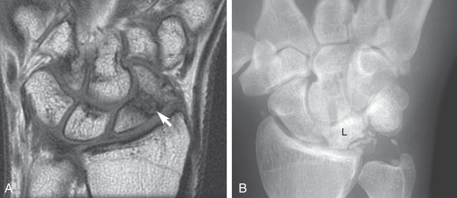
Như minh họa trong Hình 7.1, hai khớp chính bên trong cổ tay (wrist) là khớp quay–cổ tay (radiocarpal joint) và khớp giữa cổ tay (midcarpal joint). Nhiều khớp liên xương cổ tay (intercarpal joints) khác cũng hiện diện giữa các xương cổ tay (carpal bones) kề nhau (xem Hình 7.7).
Các thành phần gần của khớp quay–cổ tay là các mặt lõm của xương quay (radius) và một đĩa khớp (articular disc) kế cận (Hình 7.7 và Hình 7.8). Như đã mô tả trong Chương 6, đĩa khớp này (thường được gọi là sụn sợi tam giác, triangular fibrocartilage) cũng là một phần không thể tách rời của khớp quay–trụ xa (distal radio-ulnar joint). Các thành phần xa của khớp quay–cổ tay là các mặt gần lồi của xương thuyền (scaphoid) và xương nguyệt (lunate). Xương tháp (triquetrum) cũng được xem là một phần của khớp quay–cổ tay vì ở tư thế lệch trụ (ulnar deviation) hoàn toàn, mặt trong của nó tiếp xúc với đĩa khớp.
Mặt khớp dày của đầu xa xương quay (distal radius) cùng đĩa khớp tiếp nhận và phân tán các lực đi qua cổ tay. Khoảng 20% tổng lực ép (compression force) đi qua khớp quay–cổ tay truyền qua đĩa khớp tới xương trụ (ulna). 80% còn lại đi trực tiếp qua xương thuyền và xương nguyệt tới xương quay.70 Diện tích tiếp xúc tại khớp quay–cổ tay có xu hướng lớn nhất khi cổ tay được duỗi một phần và hơi lệch theo hướng trụ.48 Đây cũng là tư thế cổ tay tại đó đạt được lực cầm nắm (grip strength) cực đại.
Khớp giữa cổ tay (midcarpal joint) là sự khớp nối giữa hàng gần và hàng xa của các xương cổ tay (xem Hình 7.8). Bao khớp (joint capsule) bao quanh khớp giữa cổ tay liên tục với từng khớp trong số rất nhiều khớp liên xương cổ tay.
Khớp giữa cổ tay có thể được chia về mặt mô tả thành các ngăn khớp trong và ngoài. Ngăn trong lớn hơn được tạo thành bởi chỏm lồi của xương cả (capitate) và đỉnh của xương móc (hamate), lồng vào chỗ lõm được tạo bởi các mặt xa của xương thuyền, xương nguyệt và xương tháp (xem Hình 7.8). Chỏm của xương cả lồng vào chỗ lõm này khá giống một khớp chỏm–ổ (ball-and-socket joint).
Ngăn ngoài của khớp giữa cổ tay được tạo thành bởi sự tiếp giáp giữa cực xa hơi lồi của xương thuyền với các mặt gần hơi lõm của xương thang (trapezium) và xương thang nhỏ (trapezoid) (xem Hình 7.8). Ngăn ngoài thiếu hình dáng trứng rõ nét của ngăn trong. Chụp X-quang động (cineradiography) vận động cổ tay cho thấy ngăn ngoài cử động ít hơn ngăn trong.61 Vì lý do này, phần phân tích vận động học khớp (arthrokinematics) của khớp giữa cổ tay về sau tập trung vào ngăn trong.
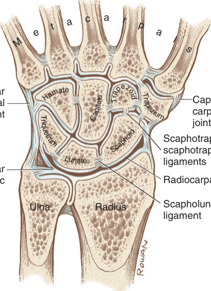
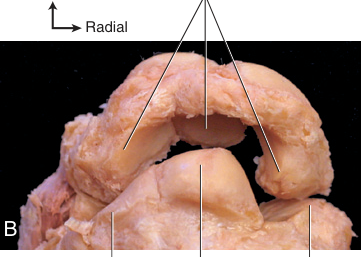
Khi tính cả khớp đậu–tháp (pisotriquetral joint), có thể nhận diện 13 khớp liên xương cổ tay riêng biệt bên trong cổ tay — quá nhiều để có thể mô tả một cách chính thức trong chương này (Hình 7.7). Hình dạng mặt khớp dao động từ gần phẳng đến lồi hoặc lõm rõ rệt. Nhìn chung, các khớp này góp phần vào vận động cổ tay thông qua những cử động trượt và xoay nhỏ, xảy ra chủ yếu giữa các xương trong hàng gần của khối xương cổ tay (carpus). So với tầm vận động (range of motion) lớn cho phép tại khớp quay–cổ tay và khớp giữa cổ tay, vận động tại các khớp liên xương cổ tay tương đối nhỏ nhưng dù sao vẫn thiết yếu cho vận động cổ tay bình thường và cho việc tạo tư thế tinh tế của bàn tay. Thêm vào đó, những cử động liên xương cổ tay nhỏ kéo căng một số dây chằng liên xương cổ tay, giúp tiêu tán các lực ép đi qua cổ tay.
Giải phẫu các dây chằng (ligaments) cổ tay thường được nghiên cứu qua phẫu tích tử thi, nội soi khớp và chụp cộng hưởng từ (MR imaging). Tuy nhiên, nhiều dây chằng có kích thước nhỏ và khó tách biệt khỏi các mô xung quanh. Dẫu vậy, tính chất khó nhận thấy của các dây chằng cổ tay không nên làm giảm tầm quan trọng hết sức to lớn của chúng đối với vận động học. Các dây chằng cổ tay thiết yếu cho việc duy trì sự thẳng hàng liên xương cổ tay tự nhiên và truyền lực bên trong và xuyên qua khối xương cổ tay. Các lực do cơ tạo ra được tích lũy trong những dây chằng bị kéo căng mang lại sự kiểm soát quan trọng đối với vận động học khớp phức tạp của cổ tay. Hơn nữa, các thụ thể cơ học (mechanoreceptors) đã được xác định trong nhiều dây chằng cổ tay, nổi bật nhất là các dây chằng mu tay.29 Khi được hoạt hóa bởi sự kéo căng hoặc nhiễu loạn cơ học, các thụ thể cơ học nằm trong dây chằng cổ tay góp phần vào cảm giác tư thế cổ tay (wrist proprioception — nhận biết vị trí và vận động).30,107 Nghiên cứu xác nhận rằng các tín hiệu cảm giác bắt nguồn trong một dây chằng nhất định đi tới một nhóm cơ cụ thể có khả năng bảo vệ cổ tay theo phản xạ.28 Các dây chằng cổ tay bị tổn thương nặng do chấn thương và bệnh lý có thể làm giảm khả năng của các thụ thể cảm giác trong việc truyền đạt với hệ thần kinh trung ương. Sự mất thông tin cảm giác này, khi kết hợp với tình trạng mất ổn định cơ học, có thể khiến cổ tay dễ bị chấn thương thêm, biến dạng và có thể cả viêm khớp thoái hóa.
Các dây chằng cổ tay được phân loại là ngoại sinh (extrinsic) hoặc nội sinh (intrinsic) (Hộp 7.1). Các dây chằng ngoại sinh có điểm bám gần trên xương quay hoặc xương trụ, và bám tận ở phía xa bên trong cổ tay. Như đã nêu trong Hộp 7.1, phức hợp sụn sợi tam giác (triangular fibrocartilage complex, TFCC — đã được giới thiệu trước đó trong Chương 6) bao gồm các cấu trúc liên quan đến cổ tay và khớp quay–trụ xa. Các dây chằng nội sinh có cả điểm bám gần lẫn điểm bám xa nằm bên trong cổ tay.
Một bao khớp xơ (fibrous capsule) bao quanh cả cổ tay lẫn khớp quay–trụ xa. Các dây chằng nằm bên trong bao khớp thường được đặt tên theo những xương chính mà chúng bám vào. Dù phương pháp đặt tên này thoạt nhìn có vẻ đơn giản, vẫn tồn tại một số điểm không thống nhất trong y văn về cách gọi tên các dây chằng. Một phần của sự không thống nhất phản ánh biến thiên tự nhiên về kích thước, hình dạng và cấu trúc của các dây chằng. Nên tham khảo thêm các nguồn tài liệu khác để biết những tên gọi thay thế của dây chằng cũng như một mô tả giải phẫu chi tiết hơn.6,66,90,99
HỘP 7.1 — Các Dây Chằng Ngoại Sinh Và Nội Sinh (Extrinsic and Intrinsic Ligaments)
CÁC DÂY CHẰNG NGOẠI SINH CỦA CỔ TAY (EXTRINSIC LIGAMENTS OF THE WRIST)
CÁC DÂY CHẰNG NỘI SINH CỦA CỔ TAY (INTRINSIC LIGAMENTS OF THE WRIST)
Dây chằng quay–cổ tay mu tay mỏng và không dễ phân biệt với chính bao khớp. Dây chằng đi về phía xa theo hướng trụ, bám chủ yếu giữa đầu xa xương quay và các mặt mu tay của xương nguyệt và xương tháp (Hình 7.9). Dây chằng quay–cổ tay mu tay gia cố mặt sau của khớp quay–cổ tay và giúp dẫn hướng vận động học khớp tự nhiên, đặc biệt của các xương ở hàng gần.92 Các sợi bám vào xương nguyệt tạo ra một sự hạn chế đặc biệt quan trọng chống lại sự trật khớp ra trước (về phía gan tay) của xương vốn không ổn định này.108
Dù mỏng, dây chằng quay–cổ tay mu tay là một trong những dây chằng cổ tay được phân bố cảm giác phong phú nhất, chứa một số lượng tương đối lớn các thụ thể cơ học.29 Vì thế dây chằng quay–cổ tay mu tay có khả năng đóng một vai trò tương đối chi phối trong cảm giác tư thế cổ tay.
Taleisnik mô tả đầu tiên chỗ dày lên ở mặt ngoài của phần ngoài–gan tay của bao khớp cổ tay như là dây chằng bên quay (radial collateral ligament) (Hình 7.10).98 Tuy nhiên, các mô tả giải phẫu gần đây hơn thường không xếp dây chằng bên quay vào một thực thể giải phẫu riêng biệt.99 Mô liên kết này, bất kể được gọi tên thế nào, có lẽ chỉ mang lại mức độ ổn định ngoài khiêm tốn cho cổ tay. Các cơ ngoại lai, chẳng hạn như cơ dạng ngón cái dài (abductor pollicis longus) và cơ duỗi ngón cái ngắn (extensor pollicis brevis), đảm nhiệm hầu hết chức năng này.
Nằm sâu và tách biệt phần lớn khỏi bao khớp gan tay của cổ tay là một số dây chằng dày và chắc, được gọi chung là dây chằng quay–cổ tay gan tay (palmar radiocarpal ligament). Dây chằng này mang lại độ ổn định cơ học tổng thể cho cổ tay lớn hơn so với dây chằng ngoại sinh mu tay mỏng hơn. Ba dây chằng chiếm ưu thế thường được mô tả trong nhóm này: dây chằng quay–thuyền–cả, dây chằng quay–nguyệt dài và dây chằng quay–nguyệt ngắn (xem Hình 7.10).90,96,99 Nhìn chung, mỗi dây chằng khởi đầu từ một vùng sần sùi trên đầu xa xương quay, đi về phía xa theo hướng chéo về phía trụ, và bám vào các mặt gan tay của một số xương cổ tay. Dây chằng quay–nguyệt ngắn bám tận ở phía xa vào xương nguyệt, trong khi dây chằng quay–nguyệt dài chạy chéo hơn bám vào xương nguyệt, với một số sợi tiếp tục đi về phía xa để hòa lẫn vào dây chằng nguyệt–tháp.40
Các dây chằng quay–cổ tay gan tay trở nên căng tối đa khi cổ tay duỗi hoàn toàn, nhờ đó giúp hạn chế sự chèn ép giữa mặt mu tay của xương quay và các xương cổ tay. Một ví dụ về vai trò của những dây chằng này trong việc dẫn hướng vận động học khớp của cổ tay sẽ được trình bày ở phần sau trong chương này.
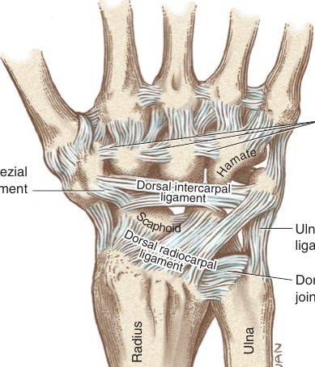
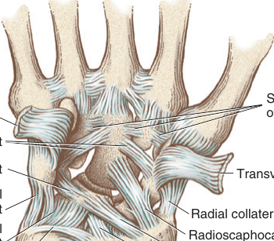
Mặc dù khoang trụ–cổ tay (ulnocarpal space) có vẻ trống rỗng trên một phim X-quang chuẩn (Hình 7.11A), trên thực tế nó được lấp đầy bởi ít nhất năm mô liên kết với nhau, được gọi chung là phức hợp sụn sợi tam giác (TFCC) (xem Hộp 7.1). Các thành phần này được minh họa trong Hình 7.11B–C. Thành phần chính của TFCC là sụn sợi tam giác (TFC) — tức đĩa khớp đã mô tả trước đó, nằm trong cả khớp quay–trụ xa lẫn khớp quay–cổ tay.
Chức năng tổng quát chính của TFCC là gắn chặt chắc chắn các đầu xa của xương quay và xương trụ, đồng thời cho phép xương quay, cùng với khối xương cổ tay gắn liền, tự do xoay (xoay sấp, pronation và xoay ngửa, supination) quanh một xương trụ được giữ cố định. Một bản tóm tắt các chức năng cụ thể hơn của TFCC được trình bày trong Hộp 7.2. Các chi tiết giải phẫu của những thành phần cấu tạo nên TFCC được mô tả trong các đoạn tiếp theo.
Sụn sợi tam giác bám trực tiếp hoặc gián tiếp vào mọi thành phần của TFCC, vì thế tạo thành bộ khung nâng đỡ cấu trúc (structural backbone) của toàn bộ phức hợp (xem Hình 7.11B–C). TFC là một đĩa khớp lõm hai mặt, cấu thành chủ yếu từ sụn sợi (fibrocartilage).66,96 Tên gọi "tam giác" nói đến hình dạng của đĩa: nền của nó bám dọc theo khuyết trụ (ulnar notch) của xương quay, còn đỉnh bám vào và gần một chỗ lõm (hố, fovea) trên mặt xa của xương trụ (xem lại Hình 6.8). Các cạnh của "hình tam giác" của TFC (từ nền tới đỉnh) được gia cố chắc chắn thông qua các kết nối với những sợi sâu hơn của các dây chằng bao gan tay và mu tay của khớp quay–trụ xa.24,66 Mặt gần của đĩa tiếp nhận một phần chỏm xương trụ tại khớp quay–trụ xa — phần cụ thể tùy thuộc vào tư thế xoay sấp–xoay ngửa chính xác. Mặt xa của đĩa tiếp nhận các mặt lồi của một phần xương nguyệt và xương tháp tại khớp quay–cổ tay (xem Hình 6.25 và Hình 7.7). 80% trung tâm của TFC không có mạch máu, với tiềm năng lành thương kém hoặc không có.9,105,112
Dây chằng trụ–cổ tay gan tay có hai phần: dây chằng trụ–tháp và dây chằng trụ–nguyệt (xem Hình 7.11B–C).66 Cặp dây chằng này có chung nguyên ủy dọc theo một phần của dây chằng bao khớp quay–trụ gan tay, tiếp tục đi về phía trong tới hố của xương trụ.34,57,66 Cả hai dây chằng đều bám tận ở phía xa vào các mặt gan tay của xương nguyệt và xương tháp. Bởi các dây chằng trụ–cổ tay chia sẻ điểm bám gần với dây chằng bao khớp quay–trụ gan tay, chúng giúp cố định vị trí của TFC một cách gián tiếp.90
Dây chằng bên trụ là một chỗ dày lên ở mặt trong của bao khớp cổ tay34 (xem Hình 7.10). Cùng với cơ gấp cổ tay trụ (flexor carpi ulnaris) và cơ duỗi cổ tay trụ (extensor carpi ulnaris), dây chằng trụ–tháp và dây chằng bên trụ vốn thường hòa lẫn vào nhau gia cố mặt trụ của cổ tay. Tuy nhiên, các dây chằng trụ này phải đủ mềm dẻo để cho phép xương quay và bàn tay xoay tự do nhưng vẫn chắc chắn quanh xương trụ được giữ cố định trong lúc xoay sấp và xoay ngửa.
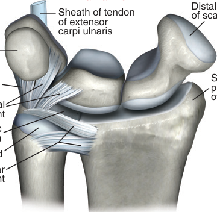
HỘP 7.2 — Các Chức Năng Cụ Thể Của Phức Hợp Sụn Sợi Tam Giác (Specific Functions of the Triangular Fibrocartilage Complex)
Phức hợp sụn sợi tam giác (TFCC)
Xem Hộp 7.1 để có bản tóm tắt các thành phần cấu tạo nên TFCC.
Về cơ bản, mọi chỗ nối giữa các xương cổ tay đều được liên kết và gia cố bởi một hoặc nhiều dây chằng nội sinh (intrinsic ligaments). Một số dây chằng tương đối dày và dễ nhận thấy, số khác thì nhỏ và thậm chí không được đặt tên chính thức. Trong chương này chỉ mô tả những dây chằng nội sinh được xác định rõ hơn và có ý nghĩa về cấu trúc. Những mô tả chi tiết hơn về các dây chằng này cũng như các dây chằng nội sinh bổ sung có thể tìm thấy ở những nguồn tài liệu khác.6,32,90,96
Các dây chằng nội sinh của cổ tay có thể được phân loại thuận tiện thành ba nhóm dựa trên chiều dài tương đối của chúng: ngắn, trung bình hoặc dài (xem Hộp 7.1).98 Các dây chằng ngắn nối các xương của hàng xa với nhau qua các mặt gan tay, mu tay hoặc gian cốt (xem các Hình 7.9 và 7.10). Các dây chằng ngắn cố định chắc chắn và gắn kết hàng xương xa, cho phép chúng hoạt động về cơ bản như một đơn vị cơ học duy nhất.
Có một số dây chằng trung bình nằm trong cổ tay. Dây chằng nguyệt–tháp (lunotriquetral ligament), được minh họa trong Hình 7.10, giúp ổn định phía trụ của xương nguyệt (lunate) so với xương tháp (triquetrum). Tuy nhiên, yếu tố ổn định chính của xương nguyệt lại là dây chằng thuyền–nguyệt (scapholunate ligament), một trong những dây chằng nội sinh quan trọng nhất và có ý nghĩa lâm sàng nhất của cổ tay (xem các Hình 7.7 và 7.8A). Dây chằng này thường được mô tả là có ba phần: mu tay, gan tay và gần.6 Mỗi thành phần của dây chằng thuyền–nguyệt dựa vào điểm bám của nó vào xương thuyền (scaphoid) vốn ổn định về mặt cơ học để giữ xương nguyệt ở đúng vị trí. Chủ đề rộng hơn về mất vững thuyền–nguyệt sẽ được mô tả thêm ở phần sau của chương này. Các dây chằng thuyền–thang và thuyền–thang nhỏ gia cố sự khớp nối giữa cực xa của xương thuyền với xương thang (trapezium) và xương thang nhỏ (trapezoid) (xem các Hình 7.7 và 7.9).6
Có hai dây chằng tương đối dài nằm trong cổ tay. Dây chằng liên xương cổ tay gan tay (palmar intercarpal ligament) bám chắc vào mặt gan tay của một phần ba phía xa của xương cả (capitate) (xem Hình 7.10). Từ điểm bám chung này, dây chằng tách đôi về phía gần, tạo thành hai nhóm sợi riêng biệt có hình dạng giống một chữ V lộn ngược. Nhánh ngoài của chữ V lộn ngược bám vào xương thuyền, còn nhánh trong bám vào xương tháp. Các dây chằng này giúp dẫn hướng vận động học khớp (arthrokinematics) của cổ tay.
Cuối cùng, một dây chằng liên xương cổ tay mu tay (dorsal intercarpal ligament) mỏng mang lại sự ổn định theo chiều ngang cho cổ tay bằng cách nối liền xương thang, xương thuyền, xương tháp và đôi khi một phần nhỏ của xương nguyệt (xem Hình 7.9).6,40,44 Đứt hoặc mỏng đi của dây chằng liên xương cổ tay mu tay có thể dẫn đến mất vững cổ tay, nổi bật nhất là giữa xương thuyền và xương nguyệt.40 Tương tự như các dây chằng quay–cổ tay mu tay (dorsal radiocarpal ligaments), các dây chằng liên xương cổ tay mu tay chứa một số lượng cơ quan thụ cảm cơ học lớn không tương xứng, gợi ý một vai trò cảm giác quan trọng trong việc phối hợp vận động cổ tay.29
Gân của cơ duỗi cổ tay trụ (extensor carpi ulnaris) đi qua ngăn sợi–xương thứ sáu của hãm gân duỗi (extensor retinaculum) (xem Hình 7.23). Sàn của ngăn này dính vào dây chằng bao mu tay (dorsal capsular ligament) của khớp quay–trụ xa (distal radio-ulnar joint). Nhờ đó, sàn của ngăn cân này cùng với gân được bao bọc gián tiếp ổn định mặt mu của phức hợp sụn sợi tam giác (TFCC).
Một phức hợp sụn sợi tam giác (TFCC) còn nguyên vẹn về cấu trúc là thiết yếu cho chức năng bình thường của khớp quay–trụ xa và cổ tay. Như đã mô tả trong Chương 6, những thay đổi thoái hóa bên trong TFCC có thể dẫn đến đau và các mức độ mất vững khớp khác nhau, thường là một trong những dấu hiệu lâm sàng sớm nhất của viêm khớp dạng thấp tiến triển. Bên cạnh đau và mất vững, các triệu chứng của sự thoái hóa hay viêm TFCC có thể bao gồm cầm nắm (grip) yếu đi, tiếng lạo xạo (crepitus) và tầm vận động (range of motion) giảm đi tại cổ tay và cẳng tay. Hơn nữa, những vết rách biệt lập ở đĩa khớp (articular disc, tức sụn sợi tam giác) có thể cho phép dịch hoạt dịch (synovial fluid) lan từ khớp quay–cổ tay (radiocarpal joint) sang khớp quay–trụ xa. Tổn thương ở phần trung tâm hơn của đĩa có thể không lành tốt và có thể được lợi từ can thiệp nội soi khớp.
Vận động học xương (osteokinematics) của cổ tay được định nghĩa chính thức cho hai bậc tự do: gấp–duỗi (flexion-extension) và lệch trụ–lệch quay (ulnar-radial deviation) (Hình 7.12). Vận động vòng tròn (circumduction) của cổ tay — một vận động tròn trọn vẹn do cổ tay thực hiện — là sự kết hợp của các vận động kể trên, chứ không phải một bậc tự do thứ ba riêng biệt.
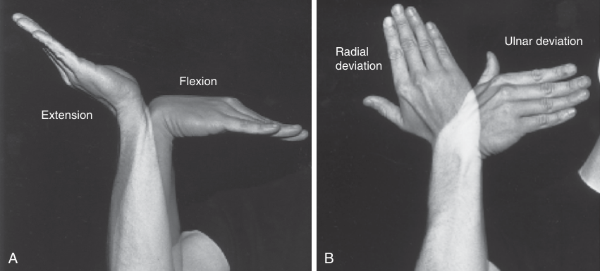
Trục xoay (axis of rotation) cho các vận động của cổ tay được báo cáo là đi qua chỏm của xương cả (Hình 7.13).117 Trục này chạy theo hướng gần như trong–ngoài đối với gấp và duỗi, và theo hướng gần như trước–sau đối với lệch quay và lệch trụ. Mặc dù các trục được vẽ như thể đứng yên, trên thực tế chúng di trú nhẹ trong suốt toàn bộ tầm vận động.72 Sự khớp nối chặt chẽ giữa xương cả và nền của xương bàn tay thứ ba (third metacarpal bone) khiến sự xoay của xương cả dẫn hướng đường vận động học xương của toàn bộ bàn tay.77
Cổ tay xoay trong mặt phẳng dọc (sagittal plane) khoảng 130 đến 160 độ (xem Hình 7.12A). Trung bình, cổ tay gấp từ 0 độ đến khoảng 70 đến 85 độ và duỗi từ 0 độ đến khoảng 60 đến 75 độ.83,85 Vận động gấp thông thường vượt duỗi khoảng 10 đến 15 độ. Duỗi ở tầm cuối bị giới hạn một cách tự nhiên bởi độ cứng của các dây chằng quay–cổ tay gan tay dày. Ở một số người, độ nghiêng gan tay của đầu xa xương quay lớn hơn mức trung bình cũng có thể hạn chế tầm duỗi (xem Hình 7.4B).
Cổ tay xoay trong mặt phẳng trán (frontal plane) xấp xỉ 50 đến 60 độ (xem Hình 7.12B).83,117 Vận động lệch quay và lệch trụ được đo bằng góc giữa xương quay và thân của xương bàn tay thứ ba. Lệch trụ xảy ra từ 0 độ đến khoảng 35 đến 40 độ. Lệch quay xảy ra từ 0 độ đến khoảng 15 đến 20 độ. Chủ yếu do độ nghiêng trụ của đầu xa xương quay (xem Hình 7.4A), lệch trụ tối đa thông thường gấp đôi mức lệch quay tối đa.
Ryu và các cộng sự đã đo tầm vận động cổ tay cần thiết để thực hiện 24 hoạt động sinh hoạt hằng ngày (ADLs) thông thường ở 40 đối tượng khỏe mạnh.83 Các ADLs này bao gồm chăm sóc cá nhân, vệ sinh, chuẩn bị thức ăn, viết, và sử dụng nhiều dụng cụ hay đồ dùng khác nhau. Các nhà nghiên cứu kết luận rằng những ADLs này có thể được thực hiện thoải mái với 40 độ gấp, 40 độ duỗi, 10 độ lệch quay và 30 độ lệch trụ. Những tầm chức năng này chiếm 50% đến 80% tầm vận động cổ tay tối đa của các đối tượng.
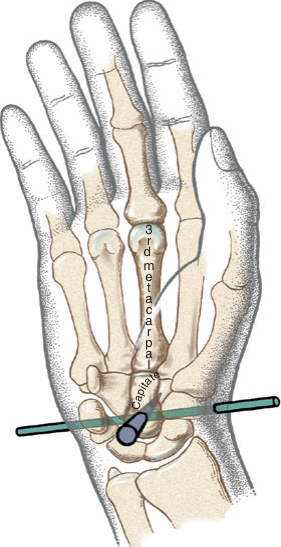
TẬP TRUNG ĐẶC BIỆT 7.2 — Xoay Dọc Trục Thụ Động Ở Cổ Tay: Bao Nhiêu Và Tại Sao? (Passive Axial Rotation at the Wrist: How Much and Why?)
Ngoài gấp–duỗi và lệch quay–lệch trụ, cổ tay còn có một mức độ xoay dọc trục thụ động (passive axial rotation) nào đó giữa các xương cổ tay và cẳng tay. Vận động phụ này (hay "độ rơ" của khớp, joint "play") có thể cảm nhận được bằng cách nắm chặt nắm đấm tay phải bằng bàn tay trái. Trong khi giữ chặt bàn tay phải không cho di chuyển, hãy cố gắng mạnh mẽ thực hiện xoay sấp (pronation) và xoay ngửa (supination) chủ động cẳng tay phải. Sự xoay dọc trục thụ động ở cổ tay phải được thể hiện qua sự xoay của đầu xa xương quay (distal radius) so với nền bàn tay. Gupta và Moosawi đã đo được trung bình 34 độ xoay dọc trục thụ động toàn phần ở 20 cổ tay không có triệu chứng; khớp giữa cổ tay (midcarpal joint) cho phép xoay dọc trục thụ động trung bình nhiều gấp ba lần khớp quay–cổ tay.27
Mức độ tối đa của sự xoay dọc trục ở cổ tay bị giới hạn một cách tự nhiên bởi hình dạng của các khớp, đặc biệt là sự khớp hình elip của khớp quay–cổ tay, và bởi sức căng trong các dây chằng quay–cổ tay được định hướng chéo.80 Bởi bậc tự do thứ ba tiềm năng của cổ tay bị hạn chế, bàn tay cuối cùng phải đi theo xương quay đang xoay sấp và xoay ngửa; và hơn nữa, sự hạn chế này cho phép các cơ xoay sấp (pronator muscles) và cơ xoay ngửa (supinator muscles) truyền mô-men xoắn (torque) của chúng qua cổ tay tới bàn tay đang làm việc.
Các vận động phụ bên trong cổ tay — cũng như trong mọi khớp hoạt dịch — làm tăng cường chức năng tổng thể của khớp. Chẳng hạn, sự xoay dọc trục ở cổ tay khuếch đại toàn bộ mức độ xoay sấp và xoay ngửa chức năng của bàn tay so với cẳng tay, đồng thời làm giảm bớt tác động của việc đạt tới những vận động ở tầm cuối này. Những chức năng này hữu ích cho các hoạt động như vắt khô quần áo hay vặn tay nắm cửa.
Nhiều phương pháp luận đã được dùng để nghiên cứu vận động học của cổ tay. Các kỹ thuật trải dài từ dùng chụp X-quang và chụp cắt lớp vi tính 3D (CT) cho tới thực hiện phẫu tích giải phẫu và dùng các hệ thống liên kết cơ–điện. Ngay cả với những kỹ thuật tinh vi, các dữ liệu thu được mô tả vận động học cổ tay vẫn không nhất quán. Những mô tả chính xác và lặp lại được về vận động học bị cản trở bởi sự phức tạp của các mặt khớp (vốn có khả năng bao gồm tám xương nhỏ trải qua những sự xoay và dịch chuyển đa mặt phẳng) và bởi sự biến thiên tự nhiên giữa con người. Mặc dù nhiều điều đã được học hỏi trong ba thập kỷ qua, việc nghiên cứu vận động học xương cổ tay vẫn tiếp tục phát triển.22,37,55,77
Một trong những tiền đề cơ bản nhất của việc nghiên cứu vận động học xương cổ tay là cổ tay là một hệ thống hai khớp, với vận động xảy ra đồng thời tại cả khớp quay–cổ tay lẫn khớp giữa cổ tay. Phần thảo luận dưới đây về vận động học khớp tập trung vào mối quan hệ động giữa hai khớp này.
Vận động học cốt yếu của vận động mặt phẳng dọc tại cổ tay có thể được nhận ra bằng cách hình dung cổ tay như một cột giữa (central column) được nối khớp, tạo thành bởi các liên kết giữa đầu xa xương quay, xương nguyệt, xương cả và xương bàn tay thứ ba (Hình 7.14). Bên trong cột này, khớp quay–cổ tay được đại diện bởi sự khớp nối giữa xương quay và xương nguyệt, còn ngăn trong của khớp giữa cổ tay được đại diện bởi sự khớp nối giữa xương nguyệt và xương cả. Khớp cổ tay–xương bàn tay (carpometacarpal joint) là một khớp nối bán cứng được tạo thành giữa xương cả và nền của xương bàn tay thứ ba.
Mặc dù các vận động cổ tay thường được mô tả và đánh giá qua mặt phẳng dọc thuần túy và mặt phẳng trán, đường vận động tự nhiên hơn lại kết hợp các yếu tố của cả hai mặt phẳng: duỗi tự nhiên đi kèm lệch quay, còn gấp đi kèm lệch trụ. Đường vận động tự nhiên tạo ra đi theo một đường chéo, tương tự động tác của người ném phi tiêu.10,37,56 Đường vận động cụ thể này thay đổi tùy theo nhiệm vụ, nhưng thường lệch ra khỏi mặt phẳng dọc thuần túy một góc trong khoảng khoảng 25 đến 50 độ.45 Một vận động như vậy là một đặc điểm riêng biệt của con người, có khả năng liên quan đến kỹ năng ném vật thể độc đáo của loài người. Sự kết hợp vận động tự nhiên này xuất hiện trong nhiều chức năng khác, chẳng hạn như buộc dây giày, mở một cái lọ, hay chải tóc. Điều thú vị là đường có sức cản thụ động nhỏ nhất đối với vận động cổ tay tương ứng với động tác "ném phi tiêu" (dart-throwing motion).20 Hơn nữa, động tác "ném phi tiêu" được cho là tối đa hóa sự tiếp xúc khớp bên trong các khớp chính của cổ tay, hạn chế sự xoay của xương thuyền và xương nguyệt (và nhờ đó giảm sức căng lên dây chằng thuyền–nguyệt vốn thường dễ tổn thương), và phản ánh những tác động chi phối của các cơ cổ tay (sẽ được mô tả).45,56 Vận động học tự nhiên liên quan đến động tác "ném phi tiêu" nên được cân nhắc kỹ trong quá trình điều trị và đánh giá chức năng cổ tay và bàn tay.116
Quyết định về cách xử trí phẫu thuật cụ thể cho một cổ tay đau dữ dội hoặc mất vững thường phụ thuộc vào những yếu tố như mức độ hay loại bệnh lý, hoặc các nhu cầu thể chất dự kiến đòi hỏi ở cổ tay sau phẫu thuật. Một số bệnh nhân có thể cần cắt bỏ hàng xương cổ tay gần (proximal row carpectomy), cho phép xương cả khớp trực tiếp với xương quay. Trong những trường hợp khác, cổ tay có thể cần một phẫu thuật làm dính khớp (arthrodesis, tức phép nối dính khớp, surgical fusion) một phần hoặc toàn phần. Nhằm giảm thiểu sự suy giảm chức năng liên quan đến làm dính khớp, cổ tay thường được làm dính ở một tư thế chức năng tĩnh "trung bình": khoảng 10 đến 15 độ duỗi và 10 độ lệch trụ.84 Mặc dù việc làm dính vĩnh viễn một cổ tay (dù chỉ một phần) có thể có vẻ là một lựa chọn triệt để, thủ thuật này lại có thể là cách điều trị tốt nhất để đạt được sự ổn định và giảm đau. Trong một số trường hợp, làm dính khớp cổ tay có thể là một lựa chọn phẫu thuật thực tiễn hơn so với thay khớp cổ tay toàn phần (total wrist arthroplasty). Điều này đặc biệt đúng ở những người có nguồn xương yếu đi do viêm khớp dạng thấp tiến triển hoặc có tiền sử nhiễm trùng xương, hoặc ở những người có thể trở lại với một nghề nghiệp hay lối sống đòi hỏi thể chất nặng nhọc sẽ gây quá tải cho khớp giả.68 Thiết kế phổ biến nhất của thay khớp cổ tay toàn phần thay thế đầu xa xương quay bị thoái hóa và hàng xương cổ tay gần bằng các khớp giả kim loại–polyethylene (metal-polyethylene implants). Một ưu điểm rõ ràng của thay khớp so với làm dính khớp cổ tay là nó cho phép bàn tay có một mức độ vận động nào đó. Tuy nhiên, nhìn chung, thay khớp cổ tay toàn phần vẫn chưa đạt được mức độ thành công như thay khớp ở các khớp khác trong cơ thể, chẳng hạn như khớp háng hoặc khớp gối.60 Một trở ngại là sự phức tạp cơ học vốn có của cổ tay; trở ngại khác là kích thước nhỏ của các thành phần thay thế, vốn tập trung ứng suất cao lên vật liệu được cấy ghép. Theo thời gian, ứng suất cao góp phần gây lỏng lẻo sớm, đặc biệt ở phía xương cổ tay của khớp giả.60,68 Tỷ lệ thành công của thay khớp cổ tay toàn phần có khả năng sẽ được cải thiện nhờ những tiến bộ không ngừng trong kỹ thuật phẫu thuật, quản lý trước và sau mổ, hiểu biết về cơ sinh học tự nhiên, và thiết kế khớp giả. Các thiết kế gần đây hơn đang cố gắng mô phỏng động tác "ném phi tiêu" tự nhiên của cổ tay, đồng thời cho phép những vận động "phụ" nhỏ được kiểm soát bên trong khớp giả.68 Việc cho phép một mức độ rơ khớp nào đó có thể giúp giảm ứng suất tại mặt tiếp giáp xương–khớp giả, với mục tiêu ngăn ngừa hoặc làm chậm sự lỏng lẻo của thiết bị.
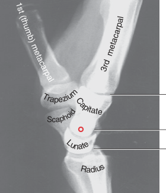
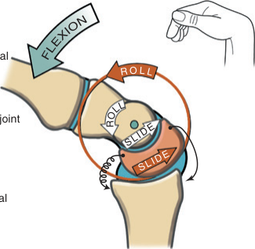
Vận động học khớp của duỗi và gấp dựa trên những sự xoay lồi–lõm đồng bộ tại cả khớp quay–cổ tay lẫn khớp giữa cổ tay. Vận động học khớp tại khớp quay–cổ tay được làm nổi bật bằng màu đỏ nhạt trong Hình 7.15. Duỗi xảy ra khi mặt lồi của xương nguyệt lăn (roll) về phía mu trên xương quay và đồng thời trượt (slide) theo hướng gan tay. Vận động lăn hướng mặt xa của xương nguyệt về phía mu, tức về hướng của duỗi. Tại khớp giữa cổ tay, được minh họa bằng màu trắng trong Hình 7.15, chỏm của xương cả lăn về phía mu trên xương nguyệt và đồng thời trượt theo hướng gan tay. Kết hợp vận động học khớp tại cả hai khớp sẽ tạo ra động tác duỗi cổ tay hoàn toàn. Hệ thống hai khớp này có ưu điểm là mang lại một tầm vận động tổng đáng kể trong khi chỉ đòi hỏi những mức độ xoay vừa phải tại từng khớp riêng lẻ. Vì thế, về mặt cơ học, mỗi khớp vận động trong một cung vận động tương đối hạn chế — và nhờ đó ổn định hơn.
Duỗi cổ tay hoàn toàn làm dài ra các dây chằng quay–cổ tay gan tay và mọi cơ bắt qua mặt gan tay của cổ tay. Sức căng bên trong những cấu trúc bị kéo giãn này giúp ổn định cổ tay ở tư thế khép chặt (close-packed position) của duỗi hoàn toàn.50,77 Sự ổn định khi duỗi cổ tay hoàn toàn hữu ích khi trọng lượng được chịu qua chi trên trong những hoạt động như bò bằng hai bàn tay và hai đầu gối, dùng dụng cụ hỗ trợ khi đi lại, và chuyển cơ thể mình từ xe lăn sang giường.
Vận động học khớp của gấp cổ tay tương tự như những điều đã mô tả cho duỗi nhưng xảy ra theo cách ngược lại (xem Hình 7.15).
Một số nghiên cứu đã cố gắng định lượng những đóng góp góc riêng lẻ của khớp quay–cổ tay và khớp giữa cổ tay vào toàn bộ vận động mặt phẳng dọc của cổ tay.13,45,54,97,115 Với rất ít ngoại lệ, hầu hết các nghiên cứu báo cáo những đóng góp đồng bộ và đại thể bằng nhau — hoặc ít nhất là đáng kể — từ cả hai khớp.
Việc dùng mô hình cột giữa đã được đơn giản hóa để mô tả gấp và duỗi cổ tay mang lại một cách khái niệm hóa xuất sắc cho một hiện tượng khá phức tạp. Tuy nhiên, một hạn chế của mô hình là nó không tính đến tất cả các xương cổ tay tham gia vào vận động. Chẳng hạn, mô hình bỏ qua vận động học của xương thuyền tại khớp quay–cổ tay. Nói ngắn gọn, vận động học khớp của xương thuyền trên xương quay tương tự như của xương nguyệt trong lúc gấp và duỗi, ngoại trừ một đặc điểm chính. Dựa trên kích thước và độ cong khác nhau của hai xương, xương thuyền lăn trên xương quay với một tốc độ khác so với xương nguyệt, nổi bật nhất là ở các cực đoan của vận động.77 Sự khác biệt này gây ra một sự dịch chuyển nhẹ giữa xương thuyền và xương nguyệt vào cuối vận động hoàn toàn. Thông thường, ở cổ tay khỏe mạnh, mức độ dịch chuyển được giảm thiểu nhờ tác động hãm giữ của các dây chằng, đặc biệt là dây chằng thuyền–nguyệt (xem các Hình 7.7 và 7.8A).
Giống như gấp và duỗi, lệch trụ và lệch quay xảy ra thông qua những sự xoay lồi–lõm đồng bộ tại cả khớp quay–cổ tay lẫn khớp giữa cổ tay.58 Trong lúc lệch trụ, khớp giữa cổ tay và, ở mức độ thấp hơn, khớp quay–cổ tay đóng góp vào toàn bộ vận động của cổ tay (Hình 7.16).38 Tại khớp quay–cổ tay được làm nổi bật bằng màu đỏ nhạt trong Hình 7.16, xương thuyền, xương nguyệt và xương tháp lăn theo hướng trụ và trượt một khoảng đáng kể về phía quay. Mức độ của sự trượt về phía quay này thể hiện rõ qua vị trí cuối cùng của xương nguyệt so với xương quay khi lệch trụ hoàn toàn. Lệch trụ tại khớp giữa cổ tay xảy ra chủ yếu do xương cả lăn theo hướng trụ và trượt nhẹ về phía quay.
Lệch quay tại cổ tay xảy ra qua vận động học khớp tương tự như đã mô tả cho lệch trụ (xem Hình 7.16). Mức độ lệch quay tại khớp quay–cổ tay bị hạn chế vì phía quay của khối xương cổ tay cọ vào mỏm trâm (styloid process) của xương quay (tham chiếu phim X-quang ở góc trên bên phải của Hình 7.16). Hệ quả là khoảng 85% lệch quay qua cổ tay xảy ra tại khớp giữa cổ tay.38
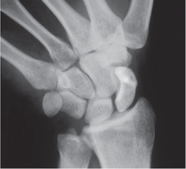
Quan sát kỹ động tác lệch trụ và lệch quay cho thấy những vận động học khớp phức tạp hơn so với mô tả ở trên. Trong các cử động ở mặt phẳng trán, hàng xương cổ tay gần (proximal row of carpal bones) "đung đưa" nhẹ theo hướng gấp và duỗi và, ở mức độ nhỏ hơn nhiều, "xoắn vặn". Cử động đung đưa này dễ nhận thấy nhất ở xương thuyền (scaphoid) và, ở mức độ thấp hơn, ở xương nguyệt (lunate). Trong lúc lệch quay (radial deviation), hàng xương gần gấp nhẹ; trong lúc lệch trụ (ulnar deviation), hàng xương gần duỗi nhẹ.38,42 Hãy lưu ý trong Hình 7.16, đặc biệt trên phim X quang, sự thay đổi vị trí của củ xương thuyền (scaphoid tubercle) giữa hai cực của lệch trụ và lệch quay. Theo Moojen và các cộng sự, ở 20 độ lệch trụ, xương thuyền được xoay khoảng 20 độ vào tư thế duỗi, so với xương quay.54 Xương thuyền dường như "đứng thẳng lên" hay dài ra, nhờ đó đẩy củ của nó về phía xa. Ở 20 độ lệch quay, xương thuyền gấp quá mức trung tính khoảng 15 độ, mang một dáng vẻ ngắn lại với củ của nó đã tiến lại gần xương quay. Sự ngắn lại về mặt chức năng của xương thuyền cho phép thêm vài độ lệch quay trước khi xảy ra sự chèn ép hoàn toàn vào mỏm trâm xương quay (styloid process of the radius). Cơ chế chính xác chịu trách nhiệm cho sự gấp và duỗi của hàng xương cổ tay gần trong lúc lệch trụ và lệch quay vẫn chưa được hiểu đầy đủ, nhưng nhiều giải thích đã được đưa ra.82 Rất có thể, cơ chế này được dẫn dắt bởi các lực thụ động trong dây chằng và sự ép giữa các xương cổ tay kề nhau. Bất kể cơ chế là gì, cử động của xương thuyền trong mặt phẳng dọc so với xương nguyệt đặt một ứng suất tự nhiên lên dây chằng thuyền–nguyệt (scapholunate ligament) (được minh họa bằng các cặp mũi tên trong Hình 7.16). Ở cổ tay bình thường, ứng suất này thường được dung nạp tốt. Tuy nhiên, trong một số trường hợp, ứng suất lặp đi lặp lại và theo chu kỳ có thể làm yếu hoặc làm đứt dây chằng này hay các dây chằng khác, đặc biệt khi kết hợp với một chấn thương đã có từ trước hoặc viêm màng hoạt dịch mạn tính do viêm khớp dạng thấp. Sự đứt gãy hay suy yếu bên trong dây chằng quan trọng này có thể làm thay đổi đáng kể vận động học khớp và sự truyền lực trong hàng xương cổ tay gần.41,114 Một khớp thuyền–nguyệt mất vững về mặt cơ học thường đi kèm với ứng suất tăng lên tại các khớp liên xương cổ tay khác, có thể dẫn đến những thay đổi thoái hóa thêm nữa của xương cổ tay và đau.41
Một cổ tay mất vững thường bị lệch trục và biểu hiện sự di động quá mức giữa một hoặc nhiều xương cổ tay, thường liên quan đến vận động học bất thường và gây đau. Nguyên nhân chính của mất vững khối xương cổ tay là sự lỏng lẻo hoặc đứt gãy của các dây chằng đặc hiệu. Biểu hiện lâm sàng của mất vững khối xương cổ tay phụ thuộc vào (các) dây chằng bị tổn thương và mức độ nặng của tổn thương. Mất vững khối xương cổ tay có thể là tĩnh (biểu hiện lúc nghỉ) hoặc động (chỉ biểu hiện trong lúc vận động tự do hoặc có kháng trở), hoặc cả hai. Các ví dụ sau đây chỉ giới thiệu hai trong số nhiều dạng mất vững khối xương cổ tay. Việc mô tả chi tiết hơn về đề tài rất rộng lớn này nằm ngoài phạm vi của giáo trình này. Xin tham khảo các nguồn khác để có thông tin chi tiết hơn.15,37,44,102
Hai Dạng Mất Vững Khối Xương Cổ Tay Thường Gặp (Two Common Forms of Carpal Instability)
Về mặt cơ học, cổ tay gồm một hàng xương cổ tay gần (proximal row of carpal bones) di động, được xen kẽ hay đặt xen giữa hai cấu trúc tương đối cứng: cẳng tay (forearm) (xương quay) và hàng xương cổ tay xa (distal row of carpal bones). Giống như những toa xe của một đoàn tàu chở hàng dễ bị trật bánh, hàng xương cổ tay gần dễ bị một sự sụp đổ xoay theo kiểu "zigzag" khi bị ép từ cả hai đầu (Hình 7.18). Các lực ép đi qua cổ tay phát sinh từ sự hoạt hóa cơ và từ tiếp xúc bên ngoài. Ở hầu hết những người khỏe mạnh, cổ tay vẫn giữ được sự ổn định suốt đời. Sự sụp đổ và tình trạng trật khớp về sau được ngăn chặn chủ yếu nhờ sức cản từ các dây chằng và từ các lực trong gân, cũng như nhờ hình dạng của các xương cổ tay kề cận.
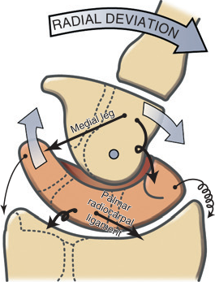
TẬP TRUNG ĐẶC BIỆT 7.3 — Sức Căng Dẫn Hướng Bên Trong Hệ Dây Chằng "Chữ V Kép" (Guiding Tensions within the "Double-V" System of Ligaments)
Vận động học khớp của cử động cổ tay xét đến cùng được dẫn dắt bởi cơ nhưng được định hướng hay kiểm soát bởi sức căng thụ động bên trong các dây chằng. Hình 7.17 minh họa một ví dụ về cách một hệ dây chằng giúp kiểm soát vận động học khớp của động tác lệch trụ và lệch quay. Ở tư thế trung tính, bốn dây chằng hiện lên như hai chữ V lật ngược, vốn được gọi là hệ dây chằng "chữ V kép" (double-V system of ligaments).98 Chữ V lật ngược ở phía xa được tạo thành bởi nhánh trong và nhánh ngoài của dây chằng liên xương cổ tay gan tay (palmar intercarpal ligament); chữ V lật ngược ở phía gần được tạo thành bởi các điểm bám vào xương nguyệt của dây chằng trụ–cổ tay gan tay (palmar ulnocarpal ligament) và dây chằng quay–cổ tay gan tay (palmar radiocarpal ligament) (xem Hình 7.10). Cả bốn nhánh của cơ chế dây chằng này đều chịu một sức căng nhẹ ngay cả ở tư thế trung tính. Trong lúc lệch trụ, sức căng thụ động tăng lên theo đường chéo ngang qua cổ tay do sự kéo giãn đặt vào nhánh ngoài của dây chằng liên xương cổ tay gan tay và các sợi của dây chằng trụ–cổ tay gan tay.111 Trong lúc lệch quay, sức căng được tạo ra theo đường chéo ngược lại nhờ sự kéo giãn ở nhánh trong của dây chằng liên xương cổ tay gan tay và các sợi của dây chằng quay–cổ tay gan tay (đặc biệt là các dây chằng quay–nguyệt dài). Sự gia tăng dần dần sức căng trong các dây chằng này cung cấp một nguồn kiểm soát cho cử động, cũng như sự ổn định động cho các xương cổ tay. Sức căng trong các dây chằng bên của cổ tay bị kéo giãn có thể hỗ trợ hệ "chữ V kép" trong việc xác định tầm cuối của lệch quay và lệch trụ.
Xương nguyệt (lunate) là xương cổ tay bị trật khớp thường xuyên nhất. Bình thường, sự ổn định của nó được cung cấp bởi các dây chằng và sự tiếp xúc khớp với các xương kề cận của hàng gần, nổi bật nhất là xương thuyền (Hình 7.19A). Nhờ có hai cực của mình, xương thuyền tạo thành một liên kết cơ học quan trọng giữa xương nguyệt và hàng xương cổ tay xa vững chắc hơn. Sự liên tục của liên kết này đòi hỏi xương thuyền và các dây chằng kề cận phải còn nguyên vẹn.53,91 Hãy xét, như một ví dụ, một cú ngã chống tay duỗi ra với hệ quả là một đường gãy ở vùng "eo" của xương thuyền, và sự rách của dây chằng thuyền–nguyệt (xem Hình 7.19B). Sự phá vỡ liên kết cơ học giữa hai xương có thể dẫn đến sự ly giải thuyền–nguyệt và sự lệch trục về sau của một hoặc cả hai xương. Như thể hiện trong Hình 7.19B, xương nguyệt vốn kém ổn định hơn có thể trật khớp, hay trật một phần, sao cho mặt khớp xa của nó hướng về phía mu tay. Tình trạng này được gọi trên lâm sàng là mất vững đoạn xen kẽ mu tay (dorsal intercalated segment instability, DISI) (Hình 7.20). Cơ chế bệnh sinh của DISI thường phức tạp hơn hay đa dạng hơn so với mô tả vừa rồi. Chẳng hạn, tổn thương ở các dây chằng khác ngoài dây chằng thuyền–nguyệt thường cũng có liên quan, như dây chằng liên xương cổ tay mu tay (dorsal intercarpal ligament) hay dây chằng quay–cổ tay mu tay (dorsal radiocarpal ligament).40,44 Hơn nữa, cơ chế bệnh sinh gây DISI có thể tồn tại ngay cả khi không có xương thuyền bị gãy. Tổn thương cả dây chằng thuyền–nguyệt lẫn dây chằng thuyền–thang (scaphotrapezial ligament) có thể cho phép xương thuyền gấp quá mức (đung đưa ra trước) trong khi xương nguyệt dần dần trật một phần về phía mu tay. Bên cạnh sự trật một phần thuyền–nguyệt có góc, một khe hở quá mức thường hình thành giữa xương thuyền và xương nguyệt (xem Hình 7.19B). Ở cổ tay thả lỏng, bằng chứng X quang về một khe hở lớn hơn 3–5 mm thường được dùng làm chuẩn để nghi ngờ một sự ly giải thuyền–nguyệt tĩnh có ý nghĩa lâm sàng.44,74 Sự co cơ chủ động liên quan đến động tác nắm giữ hay chịu trọng lượng qua cổ tay với một DISI có thể ép xương cả về phía gần, chèn vào giữa xương thuyền và xương nguyệt, nhờ đó làm rộng thêm khe hở đã có từ trước.
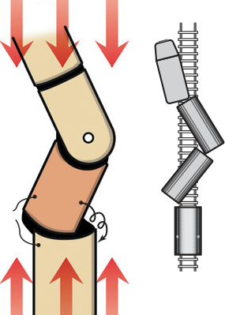
Tổn thương ở các dây chằng khác, như dây chằng nguyệt–tháp (lunotriquetral ligament), có thể cho phép xương nguyệt trật khớp sao cho mặt khớp xa của nó hướng theo tư thế gan tay (volar, palmar). Tình trạng này được gọi là mất vững đoạn xen kẽ gan tay (volar (palmar) intercalated segment instability, VISI). Bất kể dạng hay hướng của sự sụp đổ xoay, hậu quả đều có thể gây đau và làm mất chức năng. Vận động học khớp bất thường có thể tạo ra những vùng chịu ứng suất cao, từ đó có thể dẫn đến tình trạng thoái hóa nặng hơn, viêm mạn tính và những thay đổi về hình dạng của xương.
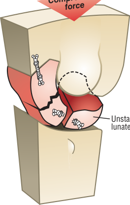
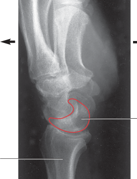
Thần kinh quay (radial nerve) phân bố cho tất cả các cơ bắt qua mặt mu của cổ tay (wrist) (xem Hình II.1B trong Phụ lục II, Phần A). Các cơ duỗi cổ tay chính là cơ duỗi cổ tay quay dài (extensor carpi radialis longus), cơ duỗi cổ tay quay ngắn (extensor carpi radialis brevis) và cơ duỗi cổ tay trụ (extensor carpi ulnaris). Thần kinh giữa (median nerve) và thần kinh trụ (ulnar nerve) phân bố cho tất cả các cơ bắt qua mặt gan tay của cổ tay, kể cả các cơ gấp cổ tay chính (xem các Hình II.1C–D trong Phụ lục II, Phần A). Cơ gấp cổ tay quay (flexor carpi radialis) và cơ gan tay dài (palmaris longus) được phân bố bởi thần kinh giữa; cơ gấp cổ tay trụ (flexor carpi ulnaris) được phân bố bởi thần kinh trụ. Để tham khảo, các rễ thần kinh tủy chính phân bố cho các cơ của chi trên được liệt kê trong Phụ lục II, Phần B. Ngoài ra, các Phần C–E của Phụ lục II còn bao gồm thêm những tài liệu tham khảo nhằm hỗ trợ việc đánh giá lâm sàng tình trạng chức năng của các rễ thần kinh tủy C5 đến T1 và một số dây thần kinh ngoại biên chính của chi trên.
Khớp quay–cổ tay (radiocarpal joint) và khớp giữa cổ tay (midcarpal joint) nhận các sợi cảm giác từ các rễ thần kinh tủy C6 và C7 được dẫn truyền trong thần kinh giữa và thần kinh quay.19,26,107 Khớp giữa cổ tay còn được phân bố bởi các dây thần kinh cảm giác đi về rễ thần kinh tủy C8 qua nhánh sâu của thần kinh trụ.
Cổ tay được điều khiển bởi một nhóm cơ chính và một nhóm cơ thứ cấp. Các gân của những cơ thuộc nhóm chính bám tận ở phía xa trong khối xương cổ tay (carpus), hoặc ở đầu gần kế cận của các xương đốt bàn tay (metacarpals); về cơ bản những cơ này chỉ tác động lên cổ tay. Các gân của những cơ thuộc nhóm thứ cấp bắt qua khối xương cổ tay khi chúng tiếp tục đi về phía xa để bám vào các ngón tay. Vì vậy các cơ thứ cấp tác động lên cả cổ tay lẫn bàn tay. Chương này tập trung nhiều hơn vào các cơ của nhóm chính. Giải phẫu và vận động học của các cơ thuộc nhóm thứ cấp — chẳng hạn như cơ duỗi ngón cái dài và cơ gấp các ngón nông — được khảo sát chi tiết trong Chương 8. Các điểm bám gần và xa cùng nguồn phân bố thần kinh của các cơ cổ tay được liệt kê trong Phụ lục II, Phần F. Cũng để tham khảo, một danh sách diện tích mặt cắt ngang của một số cơ cổ tay chọn lọc được trình bày trong Phụ lục II, Phần G.
Như minh họa trong Hình 7.13, trục xoay trong–ngoài và trục xoay trước–sau của cổ tay giao nhau bên trong đầu của xương cả (capitate). Với ngoại lệ có thể là cơ gan tay dài, không có cơ nào có đường lực đi xuyên đúng qua một trong hai trục xoay này. Ít nhất là từ tư thế giải phẫu, do đó, hầu như mọi cơ cổ tay đều được trang bị những cánh tay đòn (moment arm) để tạo mô-men xoắn ở cả mặt phẳng dọc lẫn mặt phẳng trán. Chẳng hạn, cơ duỗi cổ tay quay dài đi ở phía mu so với trục xoay trong–ngoài và ở phía ngoài so với trục xoay trước–sau. Sự co của riêng cơ này sẽ tạo ra một sự kết hợp giữa duỗi cổ tay và lệch quay (radial deviation). Việc dùng cơ duỗi cổ tay quay dài để tạo ra một cử động lệch quay thuần túy, chẳng hạn, đòi hỏi sự hoạt hóa của các cơ khác nhằm trung hòa tiềm năng duỗi cổ tay không mong muốn của chính cơ vừa nêu. Các cơ của cổ tay và bàn tay hiếm khi hoạt động đơn lẻ khi tạo ra một cử động có ý nghĩa. Chủ đề về sự hợp tác giữa các cơ này sẽ được phát triển thêm trong chương này và trong Chương 8.
Một cổ tay đau đớn và không ổn định có thể không cung cấp được một nền tảng vững chắc cho bàn tay. Một cổ tay bị sụp đổ cũng có thể làm thay đổi mối quan hệ chiều dài–sức căng và các cánh tay đòn của những cơ bắt qua vùng này. Phẫu thuật thường là một can thiệp cần thiết đối với tình trạng phân ly thuyền–nguyệt tiến triển.44 Một nhà trị liệu bàn tay có năng lực đóng vai trò quan trọng trong việc quản lý quá trình phục hồi chức năng sau phẫu thuật.18,94 Các nhà trị liệu phải hiểu được cả cơ chế bệnh sinh nền tảng lẫn ca phẫu thuật để tối ưu hóa lợi ích của can thiệp y khoa.
Như đã nêu trước đó, đầu xa của xương quay (radius) được nghiêng theo hướng từ bên này sang bên kia sao cho mặt khớp của nó dốc theo hướng trụ khoảng 25 độ (xem Hình 7.4A). Độ nghiêng trụ này của xương quay tạo ra một xu hướng tự nhiên cho khối xương cổ tay trượt (dịch chuyển) về phía trụ.2 Hình 7.21 cho thấy một cổ tay có độ nghiêng trụ 25 độ có lực dịch chuyển về phía trụ bằng 42% tổng lực ép bắt qua cổ tay. Lực dịch chuyển này bị chống lại một cách tự nhiên bởi sức căng thụ động từ nhiều dây chằng ngoại sinh, chẳng hạn như các dây chằng quay–cổ tay mu tay và gan tay.90 Một bệnh lý như viêm khớp dạng thấp có thể làm suy yếu các dây chằng của cổ tay. Theo thời gian, khối xương cổ tay có thể di cư về hướng trụ. Một sự di chuyển về phía trụ quá mức có thể làm thay đổi đáng kể cơ sinh học của cổ tay, có khả năng khởi phát một biến dạng kiểu zigzag lan về phía xa khắp các khớp của bàn tay.
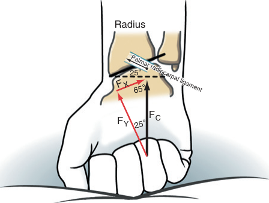
CÁC CƠ DUỖI CỔ TAY (Wrist Extensor Muscles)
NHÓM CHÍNH (CHỈ TÁC ĐỘNG LÊN CỔ TAY) (PRIMARY SET [ACT ON WRIST ONLY])
NHÓM THỨ CẤP (TÁC ĐỘNG LÊN CỔ TAY VÀ BÀN TAY) (SECONDARY SET [ACT ON WRIST AND HAND])
Các cơ duỗi cổ tay chính là cơ duỗi cổ tay quay dài, cơ duỗi cổ tay quay ngắn và cơ duỗi cổ tay trụ (Hình 7.22). Cơ duỗi các ngón (extensor digitorum) cũng có khả năng tạo ra một mô-men duỗi cổ tay đáng kể nhưng chủ yếu tham gia vào động tác duỗi các ngón tay. Các cơ duỗi cổ tay thứ cấp khác là cơ duỗi ngón trỏ (extensor indicis), cơ duỗi ngón út (extensor digiti minimi) và cơ duỗi ngón cái dài (extensor pollicis longus).
Các điểm bám gần của các cơ duỗi cổ tay chính nằm trên và gần mỏm trên lồi cầu ngoài (lateral epicondyle, "mỏm duỗi–xoay ngửa") của xương cánh tay (humerus) và bờ mu của xương trụ (ulna) (xem các Hình 6.2 và 6.6). Ở phía xa, cơ duỗi cổ tay quay dài và cơ duỗi cổ tay quay ngắn bám cạnh nhau lần lượt vào các nền mu của xương đốt bàn tay thứ hai và thứ ba; cơ duỗi cổ tay trụ bám vào nền mu của xương đốt bàn tay thứ năm.
Các gân của những cơ bắt qua mặt mu và mặt mu–quay của cổ tay được giữ cố định tại chỗ bởi hãm gân duỗi (extensor retinaculum) (Hình 7.23). Về hướng trụ, hãm gân duỗi quấn quanh mỏm trâm (styloid process) của xương trụ để bám ở phía gan tay của gân cơ gấp cổ tay trụ, xương đậu (pisiform) và dây chằng đậu–đốt bàn tay (pisometacarpal ligament). Về hướng quay, hãm gân này bám vào mỏm trâm của xương quay và dây chằng bên quay (radial collateral ligament). Hãm gân duỗi ngăn các gân nằm bên dưới không bị "căng như dây cung" nhô lên và tách ra khỏi khớp quay–cổ tay trong các cử động chủ động của cổ tay.
Giữa hãm gân duỗi và các xương nằm bên dưới là sáu ngăn xơ–xương (fibro-osseous compartments) chứa các gân cùng với những bao hoạt dịch (synovial sheaths) của chúng.35 Các nhà lâm sàng thường gọi những ngăn này bằng chữ số La Mã từ I đến VI (xem Hình 7.23). Mỗi ngăn chứa một tập hợp gân riêng biệt. Viêm bao gân (tenosynovitis) thường xảy ra trong một hoặc nhiều ngăn trong số này, thường do các hoạt động lặp đi lặp lại hoặc dùng lực mạnh làm tăng sức căng lên các gân liên quan.17 Các gân và màng hoạt dịch bao quanh trong ngăn I đặc biệt dễ bị viêm, một tình trạng gọi là viêm bao gân de Quervain (de Quervain's tenosynovitis). Những hoạt động thường gây ra tình trạng đau đớn này gồm việc liên tục ấn công tắc kích hoạt trên một dụng cụ điện, cầm chặt dụng cụ trong lúc đồng thời xoay ngửa và xoay sấp cẳng tay, hoặc vắt kiệt quần áo. Viêm bao gân de Quervain thường được điều trị bảo tồn bằng cách dùng dẫn thuốc qua siêu âm (phonophoresis) hoặc điện di ion (iontophoresis), tiêm corticosteroid, chườm đá, đeo nẹp ngón cái dựa trên bàn tay–cổ tay, và điều chỉnh các hoạt động đã gây ra tình trạng viêm.51 Nếu điều trị bảo tồn không làm giảm được viêm, có thể cần chỉ định phẫu thuật giải phóng ngăn thứ nhất.
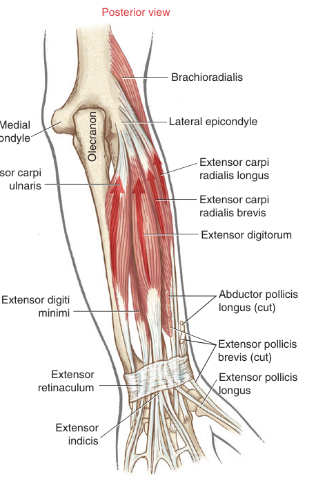
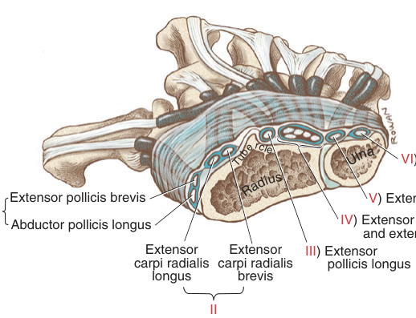
Có sẵn số liệu về vị trí tương đối, diện tích mặt cắt ngang và chiều dài cánh tay đòn trong của hầu hết các cơ bắt qua cổ tay.5,46,79,101 Nhờ biết vị trí gần đúng của các trục xoay của cổ tay, những số liệu này cung cấp một phương pháp hữu ích để ước tính tác động và tiềm năng mô-men xoắn tương đối của các cơ cổ tay (Hình 7.24). Chẳng hạn, hãy xét cơ duỗi cổ tay trụ và cơ gấp cổ tay trụ. Bằng cách quan sát vị trí của mỗi gân so với trục xoay, có thể thấy rõ rằng cơ duỗi cổ tay trụ là cơ duỗi và cơ lệch trụ, còn cơ gấp cổ tay trụ là cơ gấp và cơ lệch trụ. Bởi cả hai cơ có diện tích mặt cắt ngang tương đương nhau, chúng có khả năng tạo ra những mức lực cực đại tương đương. Tuy nhiên, để ước tính sản lượng mô-men xoắn tương đối của hai cơ này, diện tích mặt cắt ngang của mỗi cơ phải được nhân với chiều dài cánh tay đòn riêng của cơ đó. Vì vậy cơ duỗi cổ tay trụ được xem là một cơ lệch trụ mạnh hơn là một cơ duỗi; còn cơ gấp cổ tay trụ được xem vừa là một cơ gấp mạnh vừa là một cơ lệch trụ mạnh.
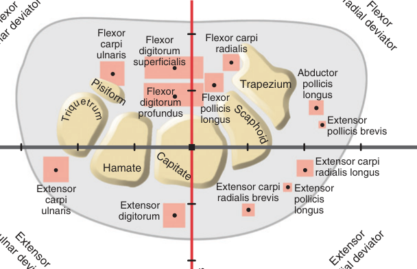
Chức năng chính của các cơ duỗi cổ tay là định vị và ổn định cổ tay trong các hoạt động có sự gấp chủ động của các ngón tay. Đặc biệt quan trọng là vai trò của các cơ duỗi cổ tay trong việc nắm đấm tay hay tạo ra một cú cầm nắm chắc. Để chứng minh điều này, hãy siết chặt rồi buông lỏng nắm đấm thật nhanh và lưu ý hoạt động đồng bộ mạnh mẽ từ các cơ duỗi cổ tay. Các cơ gấp ngón ngoại lai, cụ thể là cơ gấp các ngón sâu (flexor digitorum profundus) và cơ gấp các ngón nông (flexor digitorum superficialis), sở hữu một cánh tay đòn trong đáng kể với tư cách là các cơ gấp cổ tay. Đòn bẩy của những cơ này đối với động tác gấp cổ tay được thể hiện rõ trong Hình 7.24. Các cơ duỗi cổ tay phải cân bằng lại mô-men gấp cổ tay đáng kể do các cơ gấp ngón tạo ra (Hình 7.25). Khi một cú nắm giữ tĩnh, chắc được áp lên một vật, chẳng hạn như cây búa, các cơ duỗi cổ tay thường giữ cổ tay ở khoảng 30 đến 35 độ duỗi và khoảng 5 đến 15 độ lệch trụ (ulnar deviation).45,67 Tư thế duỗi này tối ưu hóa mối quan hệ chiều dài–sức căng của các cơ gấp ngón ngoại lai, nhờ đó tạo điều kiện cho lực cầm nắm cực đại (Hình 7.26).
Những đòi hỏi cơ học vốn đã lớn đặt lên các cơ duỗi cổ tay trong lúc nắm giữ có thể liên quan đến bệnh lý. Các yếu tố giải phẫu cho thấy cơ duỗi cổ tay quay ngắn dính líu nhiều hơn về cơ chế bệnh sinh so với các cơ duỗi cổ tay khác. Một phần điểm bám gần của cơ duỗi cổ tay quay ngắn (cơ duỗi quay ngắn) hòa lẫn vào bao khớp (joint capsule) của khớp cánh tay–quay (humeroradial joint) và dây chằng bên quay kế cận của khớp khuỷu tay.63,96 Việc tác dụng lực quá mức và lặp đi lặp lại lên cơ này do đó có thể làm quá tải những mô liên kết đó, khiến chúng dễ bị những thay đổi bệnh lý hoặc thoái hóa. Hơn nữa, gân gần của cơ duỗi cổ tay quay ngắn tự nhiên tiếp xúc với bờ ngoài của chỏm lồi (capitulum) (ở đầu xa xương cánh tay) trong lúc gấp và duỗi khuỷu tay. Sự tiếp xúc này có thể làm mài mòn mặt dưới của cơ này.7
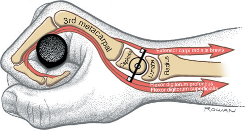
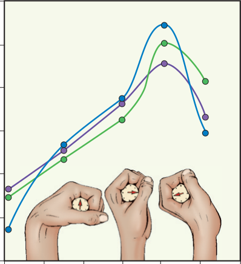
Cơ duỗi cổ tay hoạt động mạnh nhất trong một cú nắm giữ nhẹ là cơ duỗi cổ tay quay ngắn.76 Khi lực cầm nắm tăng lên, cơ duỗi cổ tay trụ và cơ duỗi cổ tay quay dài cũng trở nên hoạt động. Những hoạt động đòi hỏi cầm nắm lặp đi lặp lại và dùng lực mạnh, chẳng hạn như đóng búa hay chơi quần vợt, có thể gây quá tải lên điểm bám gần của các cơ duỗi cổ tay. Tình trạng này có thể dẫn đến một bệnh lý mạn tính đau đớn gọi là đau mỏm trên lồi cầu ngoài (lateral epicondylalgia), hay thông thường hơn là "khuỷu tay quần vợt" (tennis elbow). Ứng suất đặt lên vùng này của khuỷu tay có thể rất lớn; lực cơ lớn cần thiết cho việc cầm nắm được trải ra trên một điểm bám tương đối nhỏ ở mỏm trên lồi cầu ngoài của xương cánh tay.
Tỷ lệ mắc đau mỏm trên lồi cầu ngoài liên quan đến những đòi hỏi thể lực cao đặt lên cổ tay và khuỷu tay, thường xảy ra tại nơi làm việc.31 Các triệu chứng gồm cầm nắm đau và yếu, cũng như đau khi gấp cổ tay thụ động và xoay sấp cẳng tay, và đau khi ấn vào mỏm trên lồi cầu ngoài. Điều trị bảo tồn truyền thống gồm nẹp hoặc băng cố định, trị liệu thủ công (kể cả xoa bóp ma sát ngang), thuốc kháng viêm không steroid, kéo giãn và tăng cường sức mạnh cho cơ duỗi cổ tay và các cơ khác, tập cơ lệch tâm, và các phương thức vật lý khác như siêu âm, chườm đá, điện trị liệu và điện di ion.3,4,11,78,104
Cơ chế bệnh sinh của đau mỏm trên lồi cầu ngoài chưa được hiểu hoàn toàn. Trước đây, tình trạng này thường được gọi là viêm mỏm trên lồi cầu ngoài (lateral epicondylitis), phản ánh quan niệm cho rằng gân gần bị quá tải của các cơ duỗi cổ tay, nhất là cơ duỗi cổ tay quay ngắn, thực sự bị viêm (vì thế mới có hậu tố -itis). Tuy nhiên, nhiều hướng nghiên cứu khác nhau đã báo cáo rằng các gân bị ảnh hưởng không biểu hiện dấu hiệu của viêm, mà của thoái hóa.1,43,75 Điều từng được xem là một quá trình viêm nguyên phát nay được cho là một quá trình thoái hóa kèm theo sự sửa chữa không hoàn chỉnh, tương tự như những gì quan sát được ở tình trạng lão hóa tiến triển, tổn thương mạch máu và chấn thương vi thể lặp đi lặp lại.81,103 Có khả năng là, trong một số trường hợp, cả quá trình viêm lẫn quá trình thoái hóa đều cùng hiện diện. Bất kể quá trình bệnh lý thực sự là gì, gốc rễ của vấn đề ít nhất một phần có nguồn gốc cơ sinh học: một ứng suất lớn được đặt lên các cơ duỗi cổ tay để cân bằng lại tiềm năng gấp cổ tay mạnh mẽ của các cơ gấp ngón ngoại lai.
TẬP TRUNG ĐẶC BIỆT 7.4 — Hội Chứng Lạm Dụng Các Cơ Duỗi Cổ Tay: "Đau Mỏm Trên Lồi Cầu Ngoài" (Overuse Syndrome of the Wrist Extensor Muscles: "Lateral Epicondylalgia")
Như thể hiện rõ trong Hình 7.26, lực cầm nắm giảm đáng kể khi cổ tay được gấp hoàn toàn. Sự suy giảm lực cầm nắm này là do sự kết hợp của hai yếu tố. Thứ nhất, và có lẽ là quan trọng hàng đầu, các cơ gấp ngón không thể tạo ra đủ lực vì chúng đang hoạt động ở một chiều dài bị rút ngắn cực kỳ xét theo đường cong chiều dài–sức căng của mình. Thứ hai, các cơ duỗi ngón bị kéo giãn quá mức, đặc biệt là cơ duỗi các ngón, tạo ra một mô-men duỗi thụ động tại các ngón, làm giảm thêm lực cầm nắm hiệu quả. Sự kết hợp giữa các hiện tượng sinh lý và cơ sinh học này giải thích tại sao một người bị liệt hoặc yếu các cơ duỗi cổ tay (chẳng hạn do tổn thương thần kinh quay) lại gặp khó khăn khi tạo ra một cú cầm nắm hiệu quả, dù các cơ gấp ngón vẫn được phân bố thần kinh đầy đủ. Việc cố tạo ra một cú cầm nắm gắng sức tối đa với các cơ duỗi bị yếu rõ rệt dẫn đến một tư thế bất thường gồm gấp ngón và gấp cổ tay (Hình 7.27A). Việc ổn định cổ tay ở tư thế duỗi nhiều hơn cho phép các cơ gấp ngón tăng gần gấp ba lực cầm nắm của chúng (xem Hình 7.27B). Việc ngăn cổ tay không bị gấp lại bằng tay hoặc bằng dụng cụ chỉnh hình duy trì các cơ gấp ngón ngoại lai ở một chiều dài được kéo dài, thuận lợi hơn cho việc tạo ra lực lớn hơn.
Thông thường, người được mô tả trong Hình 7.27 đeo một chiếc nẹp giữ cổ tay ở 10 đến 20 độ duỗi. Nếu thần kinh quay không tái phân bố thần kinh được cho các cơ duỗi cổ tay, gân của một cơ khác có thể được phẫu thuật chuyển hướng để tạo ra mô-men duỗi cổ tay. Ví dụ, cơ xoay sấp tròn (pronator teres), được phân bố bởi thần kinh giữa, được khâu vào gân của cơ duỗi cổ tay quay ngắn. Trong ba cơ duỗi cổ tay chính, cơ duỗi cổ tay quay ngắn nằm ở vị trí trung tâm nhất tại cổ tay và có cánh tay đòn lớn nhất cho động tác duỗi cổ tay (xem Hình 7.24).
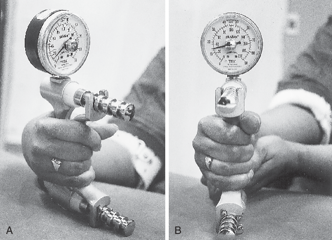
CÁC CƠ GẤP CỔ TAY (Wrist Flexor Muscles)
NHÓM CHÍNH (CHỈ TÁC ĐỘNG LÊN CỔ TAY) (PRIMARY SET [ACT ON WRIST ONLY])
NHÓM THỨ CẤP (TÁC ĐỘNG LÊN CỔ TAY VÀ BÀN TAY) (SECONDARY SET [ACT ON WRIST AND HAND])
Ba cơ gấp cổ tay chính là cơ gấp cổ tay quay, cơ gấp cổ tay trụ và cơ gan tay dài (Hình 7.28). Cơ gan tay dài (palmaris longus) thường vắng mặt ở khoảng 15% số người, dù tỷ lệ này có thể thay đổi đáng kể tùy theo sắc tộc.88,100 Ngay cả khi hiện diện, cơ này cũng thường biểu hiện sự khác biệt về hình dạng và số lượng gân. Gân của cơ này thường được dùng làm gân cho trong phẫu thuật ghép gân.
Các gân của ba cơ gấp cổ tay chính dễ dàng nhận ra ở mặt trước của đoạn xa cẳng tay, nhất là trong lúc hoạt hóa đẳng trường mạnh. Dây chằng cổ tay gan tay (palmar carpal ligament), không dễ nhận biết bằng sờ nắn, nằm ở phía gần của dây chằng ngang cổ tay (transverse carpal ligament). Cấu trúc này, tương tự như hãm gân duỗi, ổn định các gân của các cơ gấp cổ tay và ngăn sự căng như dây cung quá mức trong lúc gấp.
Các cơ thứ cấp khác có khả năng gấp cổ tay là các cơ gấp ngoại lai của các ngón: cơ gấp các ngón sâu, cơ gấp các ngón nông và cơ gấp ngón cái dài (flexor pollicis longus). (Việc xếp loại những cơ này là cơ gấp cổ tay "thứ cấp" không nên được hiểu là chúng có tiềm năng hạn chế trong việc thực hiện nhiệm vụ này. Thực tế, dựa trên diện tích mặt cắt ngang và các cánh tay đòn gấp cổ tay của các cơ [xem Hình 7.24], tiềm năng mô-men gấp cổ tay của các cơ gấp ngoại lai của ngón có thể vượt cả các cơ gấp cổ tay chính.) Với cổ tay ở tư thế trung tính, cơ dạng ngón cái dài (abductor pollicis longus) và cơ duỗi ngón cái ngắn (extensor pollicis brevis) có một cánh tay đòn nhỏ cho động tác gấp cổ tay (xem Hình 7.24).
Các điểm bám gần của các cơ gấp cổ tay chính nằm trên và gần mỏm trên lồi cầu trong (medial epicondyle, "mỏm gấp–xoay sấp") của xương cánh tay và bờ mu của xương trụ (xem các Hình 6.2 và 6.6). Về mặt kỹ thuật, gân của cơ gấp cổ tay quay không bắt qua cổ tay đi trong ống cổ tay (carpal tunnel); đúng hơn là gân này đi trong một đường hầm riêng biệt được tạo bởi một rãnh trên xương thang (trapezium) và cân từ dây chằng ngang cổ tay kế cận (Hình 7.29). Gân của cơ gấp cổ tay quay bám tận ở phía xa vào nền gan tay của xương đốt bàn tay thứ hai và đôi khi cả thứ ba. Cơ gan tay dài có điểm bám tận chủ yếu vào cân gan tay (palmar aponeurosis) dày. Gân của cơ gấp cổ tay trụ đi về phía xa để bám vào xương đậu và, trong một mặt phẳng nông hơn dây chằng ngang cổ tay, vào dây chằng đậu–móc (pisohamate ligament), dây chằng đậu–đốt bàn tay và nền của xương đốt bàn tay thứ năm.
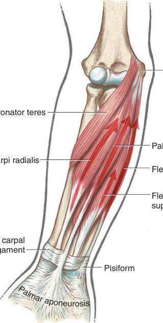
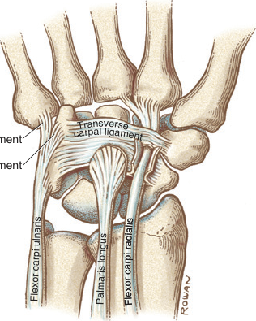
Dựa trên cánh tay đòn và diện tích mặt cắt ngang (xem Hình 7.24), cơ gấp cổ tay trụ có tiềm năng mô-men gấp cổ tay lớn nhất trong ba cơ gấp cổ tay chính. Trong lúc gấp cổ tay chủ động, cơ gấp cổ tay quay và cơ gấp cổ tay trụ hoạt động cùng nhau như các cơ hiệp đồng, đồng thời đối kháng lẫn nhau về khả năng lệch quay và lệch trụ của mỗi cơ.
Một cơ gấp cổ tay trụ bị co cứng quá mức thường góp phần tạo ra biến dạng gấp cổ tay (và lệch trụ) ở người bị bại não (cerebral palsy). Phẫu thuật cắt gân và chuyển hướng gân của cơ này sang mặt duỗi của cổ tay thường được thực hiện để lập lại sự cân bằng động học cho cổ tay. Tuy nhiên, các nghiên cứu đã cho thấy rằng ngay cả sau khi cắt hoàn toàn gân cơ gấp cổ tay trụ tại mức xương đậu, lực chủ động được tạo ra bên trong cơ này vẫn có khả năng gấp cổ tay.12 Hiện tượng như vậy có thể được giải thích bởi sự hiện diện của các liên kết mạc cơ vốn tồn tại tự nhiên trong cẳng tay giữa thân cơ gấp cổ tay trụ và thân các cơ gấp cổ tay khác, kể cả cơ gấp các ngón sâu và cơ gấp các ngón nông. Một sự truyền lực giữa các cơ như vậy có lẽ phổ biến hơn những gì thường được tin tưởng, và có lẽ cũng xảy ra ở những nhóm cơ khác có chung các điểm bám gần tương tự.
Như được nêu trong Bảng 7.1, các thử nghiệm sức mạnh gắng sức tối đa đã cho thấy các cơ gấp cổ tay có khả năng tạo ra mô-men đẳng trường lớn hơn khoảng 70% so với các cơ duỗi cổ tay — lần lượt là 12.2 Nm so với 7.1 Nm.14 Tổng diện tích mặt cắt ngang lớn hơn của các cơ gấp cổ tay (kể cả các cơ gấp ngón ngoại lai) có thể giải thích phần lớn sự chênh lệch này.33 Mô-men gấp cổ tay đỉnh xảy ra ở khoảng 40 độ gấp, chủ yếu là do sự tăng vọt của cánh tay đòn gấp cổ tay tổng thể khi cổ tay gấp lại.25
| Nhóm Cơ Cổ Tay (Wrist Muscle Group) | Mô-Men Đỉnh Trung Bình (Mean Peak Torque) (Nm)* | Góc Cổ Tay Trùng Với Mô-Men Đỉnh (Wrist Angle Coinciding with Peak Torque) |
|---|---|---|
| Các cơ gấp (Flexors) | 12.2 (3.7)† | 40 độ gấp |
| Các cơ duỗi (Extensors) | 7.1 (2.1) | Từ 30 độ gấp đến 70 độ duỗi |
| Các cơ lệch quay (Radial deviators) | 11.0 (2.0) | 0 độ (trung tính) |
| Các cơ lệch trụ (Ulnar deviators) | 9.5 (2.2) | 0 độ (trung tính) |
Số liệu lấy từ Delp SL, Grierson AE, Buchanan TS: Maximum isometric moments generated by the wrist muscles in flexion-extension and radial-ulnar deviation, J Biomech 29:1371, 1996.
*Quy đổi: 1.36 Nm/ft-lb.
†Các độ lệch chuẩn được đặt trong ngoặc đơn.
Các cơ có khả năng tạo ra lệch quay (radial deviation) của cổ tay là cơ duỗi cổ tay quay ngắn và cơ duỗi cổ tay quay dài, cơ duỗi ngón cái dài và cơ duỗi ngón cái ngắn, cơ gấp cổ tay quay, cơ dạng ngón cái dài (abductor pollicis longus) và cơ gấp ngón cái dài (xem trong Hình 7.24). Ở tư thế cổ tay trung tính, cơ duỗi cổ tay quay dài và cơ dạng ngón cái dài có tích số giữa diện tích mặt cắt ngang và cánh tay đòn lớn nhất đối với mô-men xoắn lệch quay. Cơ duỗi ngón cái ngắn có cánh tay đòn lớn nhất trong số mọi cơ lệch quay; tuy nhiên, do diện tích mặt cắt ngang tương đối nhỏ, mô-men xoắn do cơ này tạo ra tương đối nhỏ. Cơ dạng ngón cái dài và cơ duỗi ngón cái ngắn mang lại sự ổn định quan trọng cho phía quay của cổ tay. Như trình bày trong Bảng 7.1, các cơ lệch quay tạo ra mô-men đẳng trường lớn hơn khoảng 15% so với các cơ lệch trụ — 11.0 Nm so với 9.5 Nm, tương ứng.14
CÁC CƠ LỆCH QUAY CỔ TAY (RADIAL DEVIATORS OF THE WRIST)
Như đã mô tả trước đó liên quan đến động tác "ném phi tiêu" (dart-throwing motion), một vận động duỗi cổ tay chủ động thường đi kèm với một mức độ lệch quay chủ động nào đó. Sự kết hợp vận động học như vậy được quan sát thấy khi các cơ lệch quay co lại để nâng cây búa lên nhằm chuẩn bị đóng một cái đinh bằng búa (Hình 7.30).45 Một số cơ được hoạt hóa được minh họa là đi ở phía ngoài trục xoay trước–sau của cổ tay. Hoạt động của cơ duỗi cổ tay quay dài và cơ gấp cổ tay quay, được thể hiện kèm cánh tay đòn, minh họa một ví dụ điển hình về hai cơ phối hợp như những cơ hiệp đồng cho một vận động này nhưng lại là cơ đối kháng cho một vận động khác. Hiệu quả ròng của sự phối hợp cơ này tạo ra một cổ tay lệch quay, được ổn định vững chắc ở tư thế duỗi để tối ưu cho việc nắm giữ cây búa.
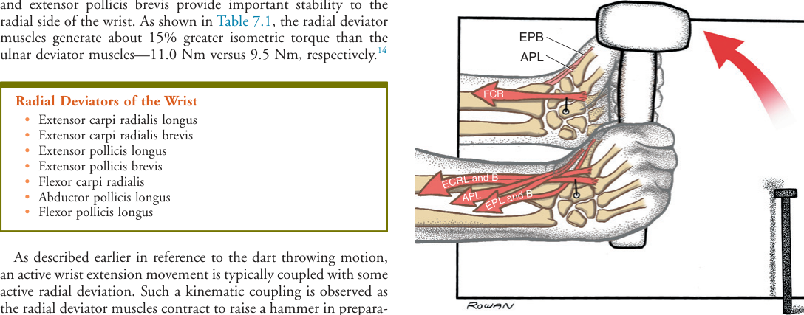
Các cơ có khả năng tạo ra lệch trụ (ulnar deviation) của cổ tay là cơ duỗi cổ tay trụ, cơ gấp cổ tay trụ, cơ gấp các ngón sâu và nông, và cơ duỗi các ngón (xem Hình 7.24). Tuy nhiên, do chiều dài cánh tay đòn, những cơ có khả năng thực hiện vận động này lớn nhất, vượt trội hơn hẳn, là cơ duỗi cổ tay trụ và cơ gấp cổ tay quay. Hình 7.31 cho thấy cặp cơ lệch trụ khỏe này đang co lại để đóng một cái đinh bằng búa. Cổ tay bị đẩy mạnh vào tư thế lệch trụ trong lúc hơi gấp đi một chút. Tuy nhiên, tư thế tổng thể của cổ tay tại thời điểm đóng đinh vẫn nghiêng về phía duỗi — một đòi hỏi để duy trì sự nắm giữ chắc cây búa.
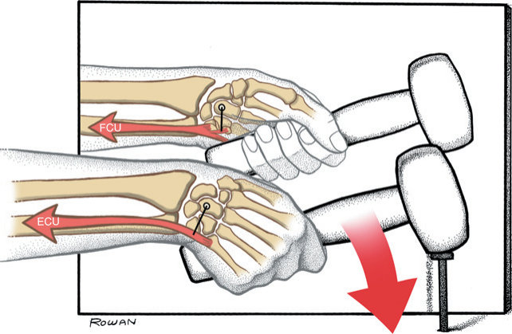
CÁC CƠ LỆCH TRỤ CỔ TAY (ULNAR DEVIATORS OF THE WRIST)
Do mối liên hệ chức năng chặt chẽ giữa cơ gấp cổ tay trụ và cơ duỗi cổ tay trụ trong lúc lệch trụ chủ động, tổn thương ở một trong hai cơ có thể làm triệt tiêu hiệu quả phối hợp của chúng. Ví dụ, viêm khớp dạng thấp thường gây viêm và đau ở gân cơ duỗi cổ tay trụ gần điểm bám xa của nó. Những nỗ lực lệch trụ chủ động với rất ít hoặc không có sự hoạt hóa ở cơ duỗi cổ tay trụ đang đau sẽ khiến tác động của cơ gấp cổ tay trụ không bị đối kháng. Tư thế gấp của cổ tay tạo ra vì thế không phù hợp để duy trì một sự cầm nắm hiệu quả.
Cổ tay gồm hai khớp chính: khớp quay–cổ tay (radiocarpal) và khớp giữa cổ tay (midcarpal). Khớp quay–cổ tay nối đầu xa của xương quay với các xương của hàng xương cổ tay gần; khớp giữa cổ tay liên kết hàng xương cổ tay gần và hàng xương cổ tay xa. Sự xoay và sự dịch chuyển giữa các khớp này tạo ra các vận động ở cả mặt phẳng trán (frontal) lẫn mặt phẳng dọc (sagittal), mặc dù hầu hết các vận động tự nhiên đều kết hợp các yếu tố của cả hai mặt phẳng: cái gọi là động tác "ném phi tiêu" (dart-throwing motion). Động tác này được dùng cho nhiều chức năng, kể cả ném, đóng búa và chải chuốt.
Lực do cơ chủ động tạo ra, rồi đến các dây chằng bị kéo căng sau đó, dẫn dắt một cách tự nhiên vận động học ngang qua cổ tay. Sau chấn thương hay bệnh lý, các dây chằng của cổ tay có thể mất khả năng duy trì sự thẳng hàng đúng đắn giữa các xương. Tình trạng vận động học khớp sai lệch và ứng suất tăng lên tại các khớp hệ quả thường dẫn thêm đến mất ổn định rõ rệt, đau và nguy cơ biến dạng. Những vận động cổ tay bị suy giảm hoặc gây đau có thể làm tổn hại nghiêm trọng chức năng của bàn tay, và vì thế là của toàn bộ chi trên.
Ngoài việc mang lại vị trí tối ưu cho bàn tay, cổ tay còn gắn với hai chức năng quan trọng khác của chi trên: tiếp nhận tải trọng và vận động học của động tác xoay sấp và xoay ngửa cẳng tay. Thứ nhất, cổ tay phải có khả năng tiếp nhận những lực ép lớn tác động lên đầu xa của chi trên, tương tự như cách mắt cá chân tiếp nhận lực trong lúc đứng hoặc đi lại. Tuy nhiên, các lực ép tác động lên cổ tay không chỉ phát sinh từ sự tiếp xúc với môi trường, chẳng hạn như chống tay nhấc người lên khỏi tay vịn của ghế, mà còn từ lực cơ được tạo ra để thực hiện một cú cầm nắm. Hình dạng được mở rộng một cách tự nhiên của đầu xa xương quay giúp giảm ứng suất tiếp xúc lên các xương cổ tay. Màng liên cốt (interosseous membrane) và các khớp nối tương đối linh hoạt bên trong hàng xương cổ tay gần tiếp tục tiêu tán các lực ép đi ngang qua cổ tay. Thường thì các lực bên ngoài có thể vượt quá khả năng của những cơ chế phân tán tải trọng này trong việc bảo vệ vùng đó, dẫn đến các chấn thương như gãy đầu xa xương quay; rách màng liên cốt, phức hợp sụn sợi tam giác (triangular fibrocartilage complex, TFCC) hay các dây chằng khác; và gãy hoặc trật các xương như xương thuyền (scaphoid) và xương nguyệt (lunate).
Cấu trúc của cổ tay cũng gắn bó chặt chẽ với vận động học của động tác xoay sấp và xoay ngửa cẳng tay. Các yếu tố của cấu trúc này hiện diện ở cả hai phía của cổ tay. Về phía quay, khớp quay–cổ tay hạn chế sự xoay dọc trục giữa khối xương cổ tay và xương quay. Bằng cách hạn chế vận động này, bàn tay buộc phải đi theo quỹ đạo của xương quay đang xoay sấp và xoay ngửa. Trong khi cổ tay giới hạn sự xoay dọc trục ở phía quay, nó lại cho phép vận động này một cách có chọn lọc ở phía trụ. Khoang trụ–cổ tay (ulnocarpal space) rộng lớn cùng các mô mềm liên quan liên kết lỏng lẻo phía trụ của khối xương cổ tay với xương trụ. Đóng vai trò như một dây neo bán đàn hồi, TFCC cho phép xương quay, cùng với khối xương cổ tay gắn chặt vào nó, xoay sấp và xoay ngửa tự do quanh đầu xa của xương trụ. Nếu thiếu sự tự do vận động này ở phía trụ của cổ tay, động tác xoay sấp và xoay ngửa của cẳng tay sẽ bị hạn chế đáng kể.
Hầu như mọi cơ bắt qua cổ tay đều có nhiều tác động — hoặc ngay tại cổ tay, hoặc tại các ngón ở xa hơn. Vì thế, những vận động tương đối đơn giản lại đòi hỏi những tương tác cơ tương đối phức tạp. Hãy xét, chẳng hạn, rằng việc duỗi cổ tay cần ít nhất một cặp cơ để tinh chỉnh mức độ lệch quay mong muốn. Cũng hãy xét đến nhu cầu phải có sự hoạt hóa cơ mạnh mẽ từ các cơ duỗi cổ tay nhằm ổn định cổ tay trong lúc cầm nắm. Nếu thiếu sự ổn định ở đoạn gần như vậy, các cơ gấp ngón có thể trở nên kém hiệu quả. Sự mất ổn định ở đoạn gần của cổ tay có thể bắt nguồn từ nhiều nguyên nhân, kể cả từ chấn thương hay bệnh lý của trung tâm thần kinh ngoại biên hoặc trung ương, hoặc từ cơn đau ở vùng mỏm trên lồi cầu ngoài — vốn là điểm bám gần của các cơ duỗi cổ tay — hoặc ở một trong sáu ngăn xơ–xương nằm ở mặt mu của cổ tay. Việc thấu hiểu cách những suy giảm này ảnh hưởng đến cơ năng học của cổ tay là một yếu tố nền tảng để mang lại can thiệp trị liệu hiệu quả nhất.
Đầu xa của xương quay và xương trụ tiếp cận phía gần của khối xương cổ tay tại hai vị trí: khớp quay–cổ tay và khoang trụ–cổ tay. Sự chênh lệch quá mức về chiều dài của xương quay hay xương trụ có thể tạo ra ứng suất lớn và có hại lên các mô mềm và xương của cổ tay. Thường thì, và đặc biệt khi kết hợp với lao động chân tay quá sức, ứng suất tăng lên tại khối xương cổ tay có thể gây viêm mạn tính, đau, đứt hay biến dạng các dây chằng, thay đổi hình dạng của xương và các mặt khớp, giảm lực cầm nắm và làm thay đổi huyết động học.
Sự khác biệt về chiều dài hay vị trí của các xương cẳng tay có thể có từ bẩm sinh hoặc có thể mắc phải qua chấn thương hay bệnh lý. Một phương pháp định lượng chiều dài tương đối của những xương này tại cổ tay được gọi là biến thiên trụ (ulnar variance).69 Phép định lượng này thường được xác định từ một phim X-quang chụp tư thế sau–trước (posterior-anterior, PA), như minh họa trong Hình 7.32. Biến thiên trụ bằng không, như được chỉ ra ở mẫu không có triệu chứng minh họa trong hình, hàm ý rằng các xương cẳng tay kéo dài về phía xa với cùng một chiều dài. Biến thiên trụ dương (positive ulnar variance) là khoảng cách mà đầu xương trụ nhô về phía xa quá đường tham chiếu; biến thiên trụ âm (negative ulnar variance) là khoảng cách mà đầu xương trụ nằm ở phía gần so với đường này. Các giá trị trung bình chuẩn của biến thiên trụ nói chung được báo cáo nằm trong khoảng từ 0 đến -1 mm, với độ lệch chuẩn khoảng 1.5 mm.87,113
Ở người khỏe mạnh, người ta kỳ vọng một biến thiên trụ gần như trung tính khi phép đo được thực hiện trên một phim X-quang tĩnh. Tuy nhiên, trong một số vận động chủ động, biến thiên trụ dao động ở những mức độ khác nhau. Ví dụ, như đã mô tả trong Chương 6, sự co của các cơ xoay sấp cẳng tay kéo xương quay hơi về phía gần.59 Dù rất nhẹ, sự di trú của xương quay này vẫn thể hiện rõ ở cả khuỷu tay lẫn cổ tay. Như minh họa trong Hình 6.29, sự di trú về phía gần của xương quay trong lúc xoay sấp chủ động làm tăng lực ép tại khớp cánh tay–quay. Sự dịch chuyển về phía gần do cơ dẫn dắt, mang tính tự nhiên, của xương quay tạo ra một biến thiên trụ dương nhẹ tại cổ tay (tức là đầu xương trụ nằm thẳng hàng xa hơn so với xương quay đã dịch chuyển).36 Sự co cơ liên quan đến việc tạo ra một cú cầm nắm cũng đã được chứng minh là kéo xương quay về phía gần, làm tăng biến thiên trụ dương thêm 1 đến 2 mm.21 (Dẫu thuật ngữ biến thiên trụ gợi ý sự dịch chuyển của xương trụ, thông thường biến thiên lại được tạo ra bởi sự dịch chuyển của xương quay; khớp cánh tay–trụ vững chắc thường hạn chế sự di trú của xương trụ.)
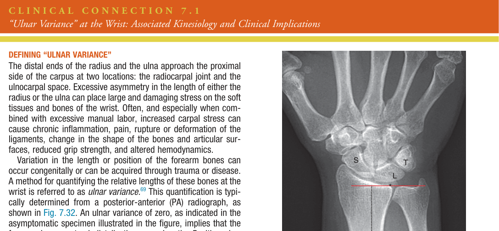
Sự thay đổi tự nhiên của biến thiên trụ theo động tác xoay sấp cẳng tay và các hoạt động cầm nắm quả thực rất nhỏ — vào khoảng 1 đến 2 mm. Tính dẻo của phức hợp sụn sợi tam giác (TFCC) và của sụn khớp phủ các xương lân cận thường thích ứng được với cử động nhỏ này mà không gây hậu quả sinh lý bất lợi. Tuy nhiên, biến thiên trụ vượt đáng kể mức tự nhiên 1 đến 2 mm có thể gây suy giảm chức năng tại cổ tay và khớp quay–trụ xa (distal radio-ulnar joint), và những suy giảm này có thể nặng nề và gây tàn tật. Các phần tiếp theo làm nổi bật những ví dụ về các trường hợp như vậy, kể cả cơ năng học liên quan và các hệ lụy đối với điều trị y khoa.
Nhiều yếu tố có thể khiến xương trụ kéo dài về phía xa hơn so với xương quay. Hình 7.33 cho thấy ví dụ về một bệnh nhân nữ từng bị trật khớp quay–trụ xa và về sau phát triển 6 mm biến thiên trụ dương. Bệnh nhân chịu đựng cơn đau dữ dội ở khoang trụ–cổ tay trong 9 tháng, dẫn đến việc phải nghỉ làm thường xuyên. Cuối cùng bệnh nhân cần phải phẫu thuật rút ngắn xương trụ, nhờ đó tái chỉnh thẳng khớp quay–trụ xa.
Biến thiên trụ dương quá mức thường liên quan đến hội chứng chen ép trụ (ulnar impaction syndrome), đặc trưng bởi sự lấn về phía xa của xương trụ vào phần vô mạch, nằm ở trung tâm hơn, của sụn sợi tam giác (triangular fibrocartilage, TFC), của xương tháp hay xương nguyệt. Khi nặng, sự chen ép trụ có thể tiến triển thành viêm và thoái hóa TFC. Hình 7.34 minh họa một ca hội chứng chen ép trụ ở một công nhân nhà máy 54 tuổi có thể lực sung túc. Cơn đau của bệnh nhân trở nặng lên do các hoạt động thực hiện ở tư thế lệch trụ và do những hoạt động vốn làm tăng biến thiên trụ dương của ông, chẳng hạn như chịu trọng lượng qua chi trên hay tạo một cú cầm nắm mạnh trong lúc xoay sấp cẳng tay. Bệnh nhân này đã bị gãy xương quay khi còn ở tuổi thiếu niên, dẫn đến một xương quay bị rút ngắn kèm theo sự di trú về phía gần về sau. Một xương quay bị rút ngắn, dù do gãy xương do ép hay do cắt bỏ chỏm xương quay bằng phẫu thuật, là tiền đề thường gặp của hội chứng chen ép trụ. Nhìn chung, khả năng di trú về phía gần của xương quay tăng lên nếu màng liên cốt cũng bị rách. Như đã mô tả trong Chương 6, một chức năng quan trọng nhưng tinh tế của màng liên cốt là chống lại sự di trú về phía gần của xương quay.
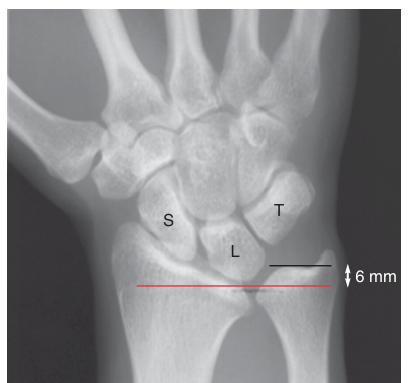
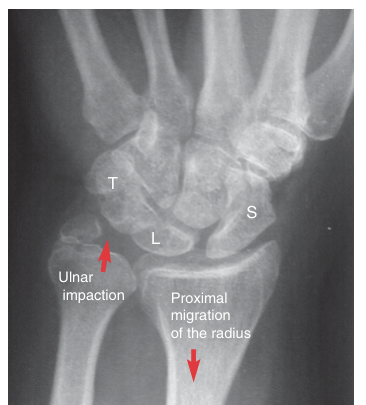
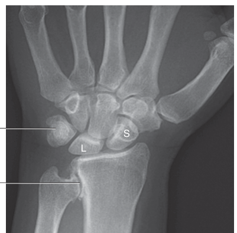
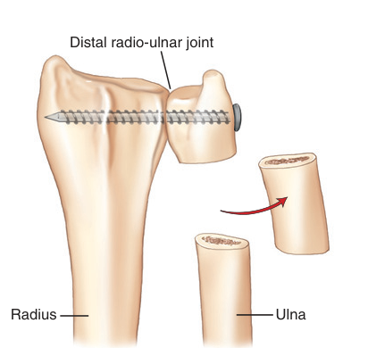
Hình 7.35 cho thấy một ca nặng biến thiên trụ âm của cổ tay, thứ phát sau một xương trụ ngắn bẩm sinh. Xương trụ bị rút ngắn đã làm thay đổi sự lồng khớp tự nhiên của khớp quay–trụ xa, nhiều khả năng làm tăng ứng suất trong khớp.64 Ứng suất tăng lên đặt vào khớp, kết hợp với nghề nghiệp đòi hỏi thể lực nặng nhọc của bệnh nhân, cuối cùng dẫn đến mất ổn định và viêm khớp thoái hóa, kể cả đứt hầu hết các thành phần TFCC của bà. Lời than phiền chính của người phụ nữ 42 tuổi này là cơn đau không kiểm soát được ở vùng trụ của cổ tay, tình trạng mất ổn định (kèm "tiếng lục cục"), và sự mất đáng kể tầm xoay của cẳng tay, đặc biệt là xoay ngửa.
Can thiệp phẫu thuật thường được yêu cầu trong các trường hợp đau dữ dội, thoái hóa và mất chức năng ở khớp quay–trụ xa và phía trụ của cổ tay. Một trong những phẫu thuật như vậy nhằm phục hồi chức năng chủ yếu tại khớp quay–trụ xa là thủ thuật Sauvé-Kapandji (Sauvé-Kapandji procedure). Bước đầu tiên của ca mổ là làm dính khớp quay–trụ xa đang mất ổn định và gây đau bằng cách dùng một con vít (Hình 7.36). Tiếp đó, một đoạn nhỏ dài 1 cm của xương trụ được cắt bỏ tại một điểm cách khớp đã dính 1 đến 2 cm về phía gần. Khoảng trống tạo ra này hình thành một "khớp giả" (pseudo-arthrosis, false joint), đóng vai trò như khớp quay–trụ xa "mới". Lúc này, động tác xoay sấp và xoay ngửa xảy ra khi xương quay, các xương cổ tay và phần xương trụ xa còn lại đều cùng xoay — như một khối thống nhất cố định — quanh đoạn xương trụ nằm ở gần hơn. Người ta thường nỗ lực ổn định "mỏm cụt" xương trụ còn lại ở phía gần, điển hình bằng cách dùng các điểm bám của cơ xoay sấp vuông và cơ duỗi cổ tay trụ.52 Một màng liên cốt còn nguyên vẹn cũng mang lại sự ổn định cho đoạn xương trụ gần.
Một ca mổ Sauvé-Kapandji thành công điển hình phục hồi ít nhất là vận động có chức năng, không gây đau ở phía trụ của cổ tay và đoạn xa cẳng tay. Cùng với một TFCC còn nguyên vẹn, đoạn xương trụ ngắn ở phía xa (đã được làm dính) đóng vai trò như một nền tảng vững chắc cho phía trụ của cổ tay, điều này đặc biệt hữu ích trong các hoạt động chịu trọng lượng.8
Bên cạnh sự thoái hóa của khớp quay–trụ xa và của TFCC, biến thiên trụ âm thường liên quan đến bệnh Kienböck (Kienböck's disease), tức là sự vỡ vụn của xương nguyệt (xem lại Tập Trung Đặc Biệt 7.1).86 Cũng như trường hợp bệnh nhân được bàn luận trong Hình 7.35, xương quay nhô về phía xa hơn ép chặt vào xương nguyệt, làm cho sự vỡ vụn và hoại tử vô mạch của xương này tiếp diễn. Điều trị phẫu thuật cho bệnh Kienböck có thể bao gồm kéo dài xương trụ, rút ngắn xương quay, hoặc, trong những ca rất nặng, cắt bỏ một phần hay toàn bộ hàng xương cổ tay gần.47,86 Tất cả những thủ thuật này đều nhằm giảm ứng suất có hại lên xương nguyệt.
Gãy đầu xa xương quay là một chấn thương chỉnh hình thường gặp của chi trên, thường do ngã chống tay duỗi thẳng. Gãy đầu xa xương quay có thể được phân loại là trong khớp hay ngoài khớp, và di lệch hay không di lệch. Hình 7.37 cho thấy hai góc chụp X-quang vuông góc nhau của một xương quay bị gãy ngoài khớp, di lệch ở một phụ nữ 40 tuổi. Hãy lưu ý rằng mỗi góc chụp cho thấy một đặc điểm khác nhau của chấn thương. Góc chụp sau–trước (PA) trong Hình 7.37A cho thấy mức độ lan rộng theo chiều ngang của đường gãy xương quay (mũi tên): từ khoảng 2.5 cm về phía gần tính từ mỏm trâm xương quay đến gần khuyết trụ. Hãy lưu ý rằng trên góc chụp PA, xương quay trông không bị di lệch nhiều. Tuy nhiên, góc chụp bên trong Hình 7.37B cho thấy đầu xa xương quay bị gập góc (hay di lệch) về phía mu khoảng 25 độ (đường màu đỏ) so với mặt phẳng ngang của hình ảnh (đường màu đen). Bởi lẽ đầu xa xương quay bình thường có độ nghiêng gan tay khoảng 10 độ (được thể hiện trong hình lồng), nên độ gập góc thực sự do gãy xương gây ra gần với 35 độ. Rõ ràng là cần ít nhất hai góc chụp X-quang để đánh giá đúng mức độ nặng và phạm vi thực sự của đường gãy; một góc chụp chéo thứ ba thường cũng được mong muốn.
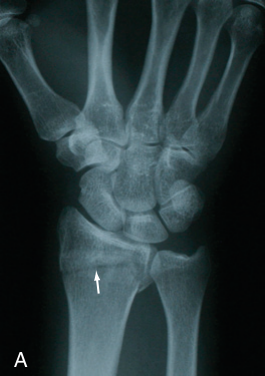
Nếu không được điều trị, xương quay minh họa trong Hình 7.37 nhiều khả năng sẽ liền ở một vị trí bất thường, ảnh hưởng đáng kể đến vận động học và chức năng tại cả khớp quay–cổ tay lẫn khớp quay–trụ xa.39,65,71 Sự lồng khớp tự nhiên bị suy giảm ở cả hai khớp sẽ tạo ra những vùng có ứng suất khớp cao, đóng vai trò như tiền đề tiềm tàng của viêm khớp thoái hóa. Khả năng này còn cao hơn nếu đường gãy nằm trong khớp, vốn xảy ra ở khoảng một trong bốn ca gãy.109 Thêm vào đó, một xương quay bị gãy mà vẫn còn di lệch đáng kể hay bị vỡ vụn thường trở nên ngắn đi về mặt chức năng, nhiều khả năng gây ra những hệ quả bất lợi tại cổ tay. Về cơ sinh học, những hệ quả này có thể bao gồm biến thiên trụ dương kèm ứng suất đặt lên xương nguyệt và lên các thành phần bên trong khớp quay–trụ xa, kể cả sụn sợi tam giác (TFC). Về sinh lý, một xương quay bị rút ngắn vĩnh viễn có thể ảnh hưởng đến mối quan hệ chiều dài–sức căng của các cơ bắt qua cổ tay, kể cả các cơ gấp ngón ngoại lai. Một đường gãy bị gập góc đáng kể về phía mu điển hình dẫn đến mất tầm gấp chức năng tại cổ tay, ngay cả khi không có sự rút ngắn mô mềm. Tương tự, một đường gãy bị gập góc đáng kể về phía gan tay điển hình dẫn đến một mức độ mất duỗi cổ tay nào đó.
Vì những lý do đã mô tả ở trên, việc đạt được sự thẳng hàng gần như bình thường của đầu xa xương quay bị gãy là một mục tiêu quan trọng của điều trị chỉnh hình. Gãy đầu xa xương quay có thể được điều trị bằng bất động qua bó bột cứng hoặc qua phẫu thuật. Phẫu thuật thường bao gồm kết hợp xương bên trong bằng dụng cụ kim loại hoặc cố định xương ngoài qua da. Lựa chọn điều trị cụ thể phụ thuộc vào nhiều yếu tố, chẳng hạn như đường gãy có bị di lệch hay vỡ vụn đáng kể hay không, tuổi tác và mức độ hoạt động của bệnh nhân, và sự hiện diện của các bệnh đồng mắc như loãng xương.
Bất kể lựa chọn điều trị chỉnh hình nào, mục tiêu cuối cùng vẫn là để xương quay liền lại với sự thẳng hàng tối ưu. Nếu đường gãy chỉ di lệch nhẹ và ổn định, điều trị có thể là bó bột đơn giản sau khi nắn chỉnh kín. Cách điều trị này có ưu điểm là tránh được phẫu thuật, nhưng, trong một số ca, có thể có nhược điểm là không bất động hoàn toàn được ổ gãy. Nếu ổ gãy không được bất động cứng chắc, vận động chủ động quá mức hay sự hoạt hóa cơ quá mức, hoặc việc chịu trọng lượng (đặc biệt trong vài tuần đầu) có thể khiến đầu xa xương quay "trượt hay lún" trở lại vị trí di lệch trước khi bó bột. Nếu điều này xảy ra hoặc bị nghi ngờ, nhà trị liệu có thể chọn một cách tiếp cận thận trọng hơn đối với phục hồi chức năng sau gãy; tuy nhiên, nếu quá thận trọng, bệnh nhân có thể bị căng cứng ở các cơ và mô mềm quanh cổ tay cũng như ở những cơ và mô nằm ở phía gần và phía xa vùng gãy. Mỗi tình huống bệnh nhân là duy nhất và không thể được giải quyết trong chương này; các hướng dẫn cụ thể về xử trí chỉnh hình và trị liệu sau gãy đầu xa xương quay có sẵn ở những nguồn khác.93,95
Phẫu thuật chỉnh hình có thể được chỉ định khi gãy đầu xa xương quay bị di lệch rõ rệt hoặc nằm trong khớp, hoặc trong những trường hợp mà việc bất động bằng bó bột là không thực tế hay không thận trọng. Phẫu thuật có ưu điểm vốn có là bất động ổ gãy ngay lập tức và cứng chắc, nhờ đó bảo đảm vị trí tối ưu trong suốt quá trình liền xương. Nếu phù hợp về mặt y khoa, các chương trình tập vận động chủ động theo tầm vận động có thể được bắt đầu sớm hơn so với bó bột. Cách tiếp cận như vậy có thể hạn chế tình trạng căng cứng cơ và mô mềm do bất động trên toàn bộ chi trên.
Đáp án cho các câu hỏi nghiên cứu có trên trang web Evolve.
TẤT CẢ VIDEO của chương này có thể được truy cập bằng cách quét mã QR nằm ở bên phải.